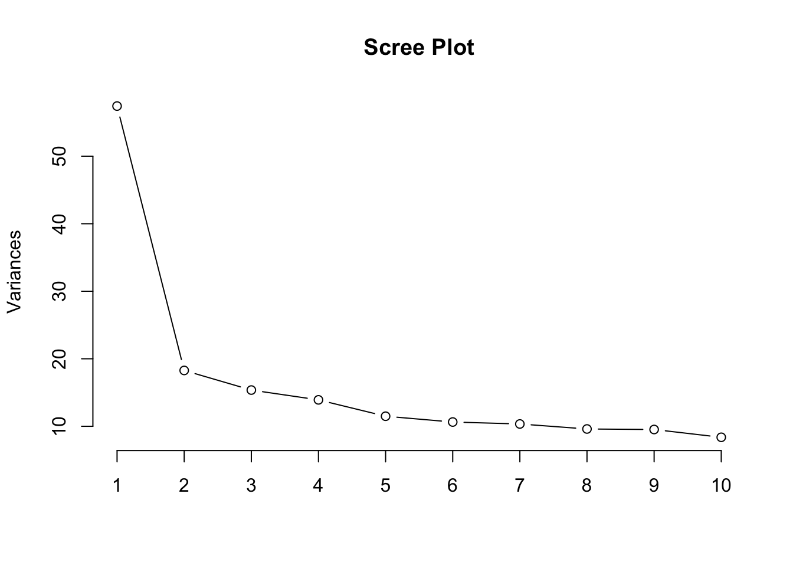
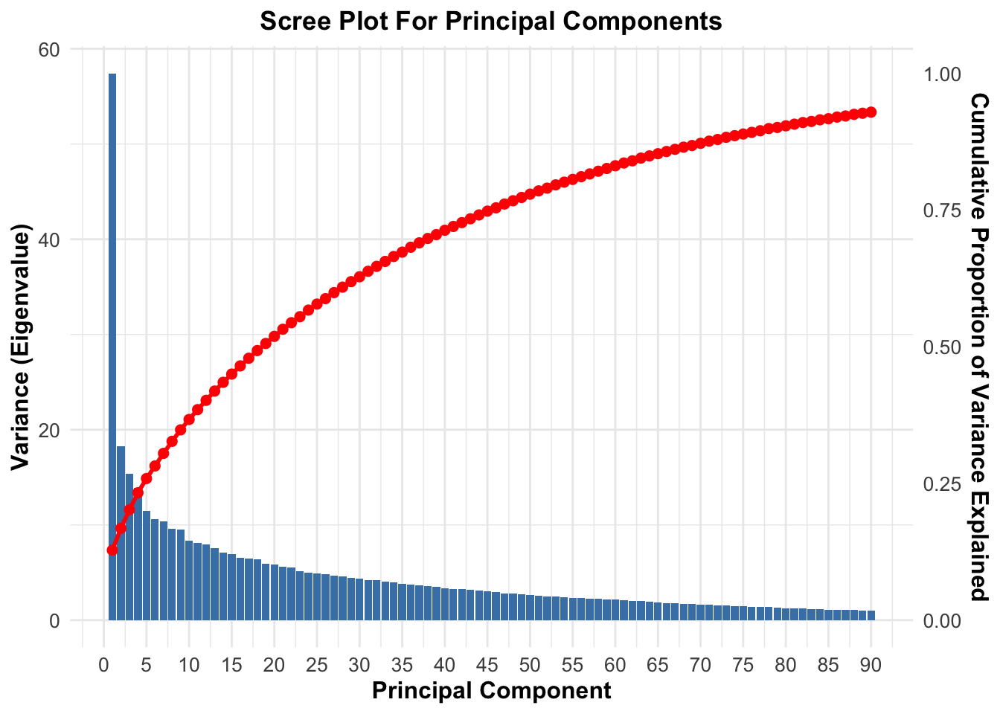
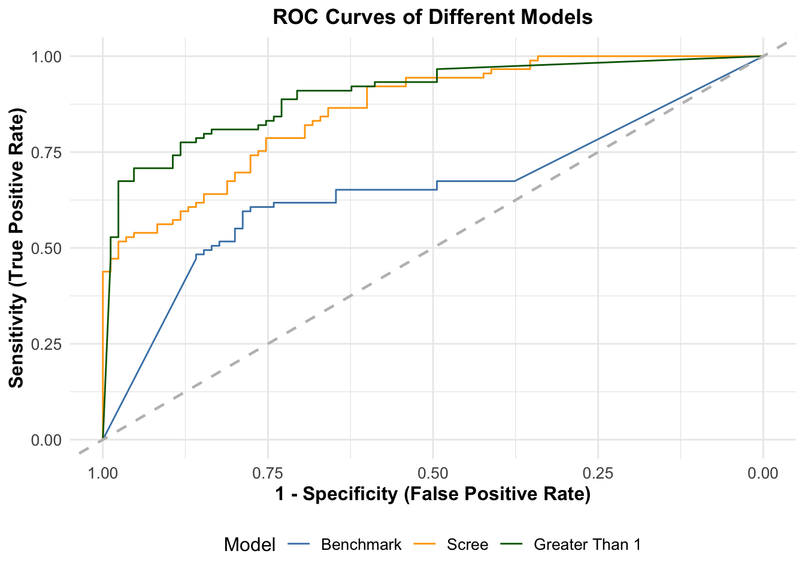
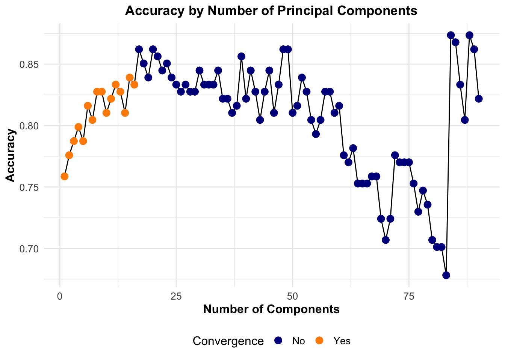

# if required, install pacman package
if (!requireNamespace("pacman", quietly = TRUE)) {
install.packages("pacman")
}
library(pacman)
# load all packages with pacman
p_load("readr", "tidyverse", "caret", "kableExtra", "pROC")INFOMDA2: Group Assignment
1. Preparations
1.1 Load Packages
1.2 Load Data
data <- read.csv("../raw_data/data.csv") # load data2. Data Exploration
First, we can explore what the data looks like by looking at the first few rows of the data set.
head(data) # show first few rows of data ID air_time1 disp_index1 gmrt_in_air1 gmrt_on_paper1 max_x_extension1
1 id_1 5160 0.00001250 120.8042 86.85333 957
2 id_2 51980 0.00001600 115.3182 83.44868 1694
3 id_3 2600 0.00001030 229.9340 172.76186 2333
4 id_4 2130 0.00001030 369.4033 183.19310 1756
5 id_5 2310 0.00000686 257.9971 111.27589 987
6 id_6 1920 0.00001140 199.7650 109.90225 1548
max_y_extension1 mean_acc_in_air1 mean_acc_on_paper1 mean_gmrt1
1 6601 0.3618002 0.2174593 103.82875
2 6998 0.2725131 0.1448799 99.38346
3 5802 0.3870199 0.1813423 201.34793
4 8159 0.5568791 0.1645023 276.29822
5 4732 0.2660766 0.1451043 184.63651
6 6260 0.2125233 0.1430133 154.83361
mean_jerk_in_air1 mean_jerk_on_paper1 mean_speed_in_air1 mean_speed_on_paper1
1 0.05183642 0.02154743 1.828076 1.493242
2 0.03982656 0.01688453 1.817744 1.517763
3 0.06422039 0.02012644 3.378343 3.308866
4 0.09040770 0.02115012 5.082499 3.542645
5 0.03752824 0.01859030 3.804656 2.180544
6 0.02836900 0.01730324 2.633861 2.105282
num_of_pendown1 paper_time1 pressure_mean1 pressure_var1 total_time1
1 22 10730 1679.232 288285.0 15890
2 11 12460 1723.171 210516.6 64440
3 10 6080 1520.253 120845.9 8680
4 10 5595 1913.996 100286.6 7725
5 8 4080 1819.121 160061.8 6390
6 7 7065 1246.059 153502.7 8985
air_time2 disp_index2 gmrt_in_air2 gmrt_on_paper2 max_x_extension2
1 6085 0.0000119 269.3558 51.34226 749
2 10515 0.0000151 272.7712 73.11585 2298
3 560 0.0000105 122.8096 92.98328 322
4 13735 0.0000140 185.2785 50.14155 647
5 4225 0.0000120 112.6197 63.49016 285
6 8115 0.0000125 226.2692 67.10517 270
max_y_extension2 mean_acc_in_air2 mean_acc_on_paper2 mean_gmrt2
1 4945 0.6161206 0.07640621 160.34903
2 5051 0.8807947 0.10393689 172.94355
3 5059 0.2111385 0.07510332 107.89643
4 4714 0.3445785 0.12988839 117.71003
5 4597 0.4342365 0.08110135 88.05492
6 4681 0.1865151 0.07418218 146.68720
mean_jerk_in_air2 mean_jerk_on_paper2 mean_speed_in_air2 mean_speed_on_paper2
1 0.11064806 0.010782803 3.374299 0.6053196
2 0.15794987 0.011602611 2.894193 0.9121609
3 0.03085406 0.009264755 2.736669 1.8565344
4 0.05332284 0.010555975 2.937015 0.8515503
5 0.06775251 0.009944379 2.879226 1.2724114
6 0.02259575 0.009358594 2.826521 1.3286963
num_of_pendown2 paper_time2 pressure_mean2 pressure_var2 total_time2
1 6 18785 1851.081 167223.59 24870
2 5 15585 1846.005 198894.34 26100
3 1 6545 1948.318 48577.02 7105
4 7 13520 1772.405 196922.25 27255
5 1 8325 1902.653 92904.06 12550
6 5 8475 1258.917 252933.91 16590
air_time3 disp_index3 gmrt_in_air3 gmrt_on_paper3 max_x_extension3
1 4345 0.00001330 330.48757 106.61123 4495
2 15885 0.00001250 240.38237 107.64818 4498
3 420 0.00000863 82.56239 146.11630 4645
4 3795 0.00001390 323.27319 75.71160 4568
5 2255 0.00001170 214.95813 70.51718 4076
6 2620 0.00001190 185.75840 65.10052 4075
max_y_extension3 mean_acc_in_air3 mean_acc_on_paper3 mean_gmrt3
1 765 0.6923865 0.1787683 218.5494
2 2386 0.8901564 0.1332201 174.0153
3 266 0.2028988 0.1022991 114.3393
4 966 0.2685806 0.1328719 199.4924
5 317 0.2339400 0.1570079 142.7377
6 332 0.2275202 0.1787646 125.4295
mean_jerk_in_air3 mean_jerk_on_paper3 mean_speed_in_air3 mean_speed_on_paper3
1 0.12526219 0.01735148 3.510505 1.223025
2 0.16104350 0.01567353 3.562667 1.219064
3 0.02674526 0.01140615 1.834658 2.906881
4 0.03960720 0.01189493 2.788984 1.448373
5 0.02902620 0.01516971 1.146908 1.414175
6 0.02918949 0.01570621 1.490628 1.295488
num_of_pendown3 paper_time3 pressure_mean3 pressure_var3 total_time3
1 4 11300 1891.246 193256.46 15645
2 8 11965 1696.049 293029.06 27850
3 1 5110 1814.446 76556.48 5530
4 5 9760 1677.355 182158.09 13555
5 4 9560 1946.521 112944.34 11815
6 4 10300 1417.600 253428.27 12920
air_time4 disp_index4 gmrt_in_air4 gmrt_on_paper4 max_x_extension4
1 30625 0.0000268 232.63991 27.31765 4353
2 7975 0.0000447 68.60261 87.47056 7718
3 1030 0.0000233 107.34819 94.27086 3960
4 13625 0.0000256 219.33884 40.69020 4487
5 100650 0.0000265 204.32275 75.55338 4429
6 3065 0.0000279 281.56585 43.56706 4184
max_y_extension4 mean_acc_in_air4 mean_acc_on_paper4 mean_gmrt4
1 4292 0.7944226 0.1299040 129.97878
2 8055 0.2706225 0.1131819 78.03659
3 4013 0.2568500 0.0909732 100.80952
4 4475 0.5326780 0.2018398 130.01452
5 4196 0.4652181 0.1613244 139.93806
6 4379 0.1899922 0.2083955 162.56645
mean_jerk_in_air4 mean_jerk_on_paper4 mean_speed_in_air4 mean_speed_on_paper4
1 0.14207476 0.013883727 4.5202860 0.4861115
2 0.03788385 0.013245459 1.5496923 1.7172785
3 0.03444210 0.009971824 0.8473932 1.8883919
4 0.08825390 0.016548018 3.1259134 0.7567612
5 0.07771886 0.015410263 2.3660062 1.3065959
6 0.02810985 0.014820225 1.8196198 0.8032918
num_of_pendown4 paper_time4 pressure_mean4 pressure_var4 total_time4
1 11 69085 1982.086 81804.55 99710
2 5 34090 1992.517 55478.15 42065
3 1 17770 1842.092 101793.37 18800
4 9 36725 1939.578 106589.47 50350
5 9 27845 1982.517 78655.39 128495
6 14 52385 1841.672 136640.46 55450
air_time5 disp_index5 gmrt_in_air5 gmrt_on_paper5 max_x_extension5
1 66034 0.0000155 125.9898 23.22667 10933
2 12875 0.0000336 151.0225 74.61684 5667
3 680 0.0000143 101.6284 77.01412 2556
4 10735 0.0000155 212.2483 27.37919 2535
5 1050 0.0000035 134.5015 33.83149 2394
6 2400 0.0000157 235.9446 36.03271 2486
max_y_extension5 mean_acc_in_air5 mean_acc_on_paper5 mean_gmrt5
1 3651 0.3816694 0.09930758 74.60822
2 5503 0.4022431 0.15721589 112.81969
3 2245 0.2406620 0.15554681 89.32126
4 2426 0.5045901 0.18479053 119.81374
5 1194 0.1908570 0.19563962 84.16651
6 2447 0.1868881 0.21855553 135.98864
mean_jerk_in_air5 mean_jerk_on_paper5 mean_speed_in_air5 mean_speed_on_paper5
1 0.06503944 0.01387506 2.224743 0.2931972
2 0.06368895 0.01626979 1.982721 1.3923935
3 0.02261701 0.01375878 1.067686 1.5404435
4 0.08432995 0.01681721 3.739092 0.5283551
5 0.02163308 0.01937076 1.151784 0.6723373
6 0.02392748 0.01873089 1.532483 0.6740522
num_of_pendown5 paper_time5 pressure_mean5 pressure_var5 total_time5
1 17 64885 1990.666 66772.33 130919
2 8 31055 1967.434 83090.53 43930
3 1 11630 1992.746 20179.47 12310
4 14 41200 1947.464 105286.49 51935
5 1 3300 1942.567 123037.73 4350
6 8 35570 1805.516 94937.32 37970
air_time6 disp_index6 gmrt_in_air6 gmrt_on_paper6 max_x_extension6
1 6065 0.00000346 244.1924 355.56352 1488
2 14465 0.00000912 130.2609 37.97866 1772
3 3055 0.00000451 156.5123 300.47989 2111
4 26060 0.00000339 214.7838 114.79130 799
5 9795 0.00000356 399.2014 127.79094 1087
6 4055 0.00000633 115.1210 60.34704 1401
max_y_extension6 mean_acc_in_air6 mean_acc_on_paper6 mean_gmrt6
1 4119 0.4547097 0.19491438 299.87798
2 3418 0.7182256 0.09284087 84.11979
3 4385 0.1601202 0.17729329 228.49609
4 2849 1.1323223 0.13760917 164.78753
5 2678 1.8316515 0.11911913 263.49619
6 3767 0.3161009 0.11559829 87.73402
mean_jerk_in_air6 mean_jerk_on_paper6 mean_speed_in_air6 mean_speed_on_paper6
1 0.07444848 0.02425705 4.948398 6.0274971
2 0.12893016 0.01167856 2.870456 0.6436435
3 0.02240231 0.01888141 3.221477 4.9468316
4 0.20820393 0.01914942 4.714804 0.8955703
5 0.35051202 0.01573506 8.010856 2.1455098
6 0.04436950 0.01274225 1.668586 1.0436751
num_of_pendown6 paper_time6 pressure_mean6 pressure_var6 total_time6
1 3 1610 1718.419 173920.7 7675
2 7 15615 1586.479 265819.7 30080
3 3 2290 1226.745 129706.1 5345
4 8 3910 1750.629 245742.7 29970
5 4 2075 1756.318 263497.5 11870
6 5 5640 1483.873 177875.8 9695
air_time7 disp_index7 gmrt_in_air7 gmrt_on_paper7 max_x_extension7
1 7540 0.00000391 390.1686 629.3478 12811
2 10105 0.00000689 133.4771 117.3277 12447
3 3300 0.00000535 273.9086 366.3688 12620
4 8650 0.00000479 162.1398 153.9132 12150
5 2640 0.00000472 420.3841 335.8347 12271
6 3550 0.00000763 250.5610 191.5648 12706
max_y_extension7 mean_acc_in_air7 mean_acc_on_paper7 mean_gmrt7
1 2459 1.6426363 0.2165585 509.7582
2 745 0.7867417 0.1490829 125.4024
3 677 1.0914981 0.1621935 320.1387
4 508 0.4609918 0.1820371 158.0265
5 822 2.4568670 0.1248099 378.1094
6 992 1.3949376 0.2009645 221.0629
mean_jerk_in_air7 mean_jerk_on_paper7 mean_speed_in_air7 mean_speed_on_paper7
1 0.31505195 0.02170294 7.937534 7.1562841
2 0.14380697 0.01663252 2.753283 0.9303131
3 0.20253279 0.01833249 5.710285 3.8853877
4 0.07633436 0.02029288 3.426591 1.1245837
5 0.46505178 0.01728918 8.599255 2.6519928
6 0.26310582 0.01752886 4.557246 1.6801643
num_of_pendown7 paper_time7 pressure_mean7 pressure_var7 total_time7
1 4 1635 1600.783 184588.9 9175
2 6 6940 1683.628 249131.6 17045
3 5 2665 1587.568 203046.6 5965
4 7 4915 1846.882 195944.1 13565
5 4 2410 1932.813 115493.3 5050
6 4 5015 1388.639 178310.3 8565
air_time8 disp_index8 gmrt_in_air8 gmrt_on_paper8 max_x_extension8
1 23690 0.00000629 98.73892 143.00386 1144
2 10345 0.00000554 85.90428 37.29577 836
3 3940 0.00000690 936.46472 117.07999 1598
4 6525 0.00000900 121.38602 90.20901 747
5 8035 0.00000574 198.88642 96.29058 1148
6 725 0.00000634 191.60083 63.12402 981
max_y_extension8 mean_acc_in_air8 mean_acc_on_paper8 mean_gmrt8
1 2492 0.3526340 0.1340996 120.87139
2 2056 0.3428660 0.1522122 61.60002
3 2323 6.1217638 0.1090422 526.77235
4 6877 0.2112860 0.1573557 105.79751
5 2146 1.3092073 0.1408932 147.58850
6 2317 0.2378958 0.2173476 127.36242
mean_jerk_in_air8 mean_jerk_on_paper8 mean_speed_in_air8 mean_speed_on_paper8
1 0.05903472 0.01657341 1.890551 2.928551
2 0.05475161 0.01580443 1.708140 0.667210
3 1.21850487 0.01304746 17.159323 2.327817
4 0.02175576 0.01914832 2.563304 1.076975
5 0.25603486 0.01423802 3.595373 1.964472
6 0.02521094 0.01645418 1.245683 1.256889
num_of_pendown8 paper_time8 pressure_mean8 pressure_var8 total_time8
1 1 4390 1965.853 60704.92 28080
2 6 8040 1585.153 306374.14 18385
3 1 4055 1834.903 42796.47 7995
4 12 8980 1906.867 153323.51 15505
5 1 3485 2019.270 34280.66 11520
6 1 4950 1749.885 78374.93 5675
air_time9 disp_index9 gmrt_in_air9 gmrt_on_paper9 max_x_extension9
1 60 0.00000406 1331.34003 49.16611 914
2 5895 0.00000742 67.34572 45.88908 812
3 625 0.00000956 299.54611 96.96948 1736
4 13920 0.00000685 237.75631 78.41489 647
5 3190 0.00000689 210.09831 93.83706 930
6 515 0.00000853 323.15256 71.96110 1028
max_y_extension9 mean_acc_in_air9 mean_acc_on_paper9 mean_gmrt9
1 1522 0.7062396 0.1850005 690.2531
2 2538 0.1947744 0.1756219 56.6174
3 4187 0.2295384 0.1204002 198.2578
4 3670 1.0396267 0.1886683 158.0856
5 2966 0.2390865 0.1658418 151.9677
6 3299 0.2139754 0.1979912 197.5568
mean_jerk_in_air9 mean_jerk_on_paper9 mean_speed_in_air9 mean_speed_on_paper9
1 0.12395405 0.01988835 24.906146 1.0211056
2 0.02607675 0.01731024 1.061536 0.9152664
3 0.03077783 0.01319062 1.238624 1.9721565
4 0.19064888 0.02241127 5.240759 1.0138980
5 0.03277937 0.01625326 2.909427 2.0074544
6 0.02272544 0.01503924 1.433135 1.4436967
num_of_pendown9 paper_time9 pressure_mean9 pressure_var9 total_time9
1 1 4850 2044.844 2236.789 4910
2 8 9485 1741.879 292112.483 15380
3 1 6345 1811.951 35086.335 6970
4 18 8335 1669.371 349777.118 22255
5 4 4490 1955.755 103532.459 7680
6 1 6190 1831.355 85951.331 6705
air_time10 disp_index10 gmrt_in_air10 gmrt_on_paper10 max_x_extension10
1 2575 0.00000566 136.05736 212.88710 1499
2 5995 0.00000820 70.23232 50.87345 1158
3 505 0.00000548 201.99674 123.41867 1779
4 20775 0.00000450 149.10315 71.64897 580
5 800 0.00000454 127.44418 71.45121 887
6 945 0.00000794 205.61391 89.30491 1366
max_y_extension10 mean_acc_in_air10 mean_acc_on_paper10 mean_gmrt10
1 3210 0.3510153 0.17157639 174.47223
2 2644 0.2155526 0.17758712 60.55289
3 2096 0.2465902 0.12248715 162.70770
4 2238 0.5696255 0.16743111 110.37606
5 1762 0.2751853 0.13465894 99.44769
6 2651 0.2600772 0.09761467 147.45941
mean_jerk_in_air10 mean_jerk_on_paper10 mean_speed_in_air10
1 0.04489498 0.01973764 2.415302
2 0.02699397 0.01934929 1.198116
3 0.02819765 0.01612240 1.905945
4 0.09396803 0.01941884 3.268555
5 0.03779275 0.01633216 1.546139
6 0.02990276 0.01254094 1.756517
mean_speed_on_paper10 num_of_pendown10 paper_time10 pressure_mean10
1 4.1460689 5 3300 1687.389
2 0.9784831 8 9280 1615.579
3 2.4949404 2 3135 1550.053
4 1.0972122 7 4475 1639.656
5 1.4323296 5 3190 1703.262
6 1.7664900 3 5590 1762.935
pressure_var10 total_time10 air_time11 disp_index11 gmrt_in_air11
1 290375.66 5875 5330 0.00000533 677.25193
2 233060.94 15275 4435 0.00000746 71.95414
3 97088.47 3640 670 0.00000500 210.49777
4 362002.38 25250 32540 0.00000476 104.23356
5 348120.52 3990 5430 0.00000436 78.57754
6 109000.20 6535 17620 0.00000704 74.44058
gmrt_on_paper11 max_x_extension11 max_y_extension11 mean_acc_in_air11
1 261.56365 1455 3682 3.7152786
2 61.63577 1168 2310 0.2021142
3 131.07964 1752 1868 0.2345438
4 82.83649 1122 2675 0.3370265
5 107.03667 1051 1625 0.3506116
6 116.94355 1208 2353 0.3171285
mean_acc_on_paper11 mean_gmrt11 mean_jerk_in_air11 mean_jerk_on_paper11
1 0.1989228 469.40779 0.72776963 0.02055575
2 0.1887302 66.79496 0.02552460 0.01976258
3 0.1517725 170.78871 0.02295731 0.01745262
4 0.1337096 93.53502 0.05448484 0.01772470
5 0.1490343 92.80710 0.05780761 0.01796907
6 0.1213512 95.69207 0.04719646 0.01518122
mean_speed_in_air11 mean_speed_on_paper11 num_of_pendown11 paper_time11
1 11.806783 5.283301 3 2795
2 1.312723 1.173585 7 6935
3 3.256623 2.635389 3 2975
4 2.267217 1.486754 6 3660
5 1.594632 2.159269 5 2410
6 1.638463 2.295077 5 4130
pressure_mean11 pressure_var11 total_time11 air_time12 disp_index12
1 1905.741 95361.58 8125 1100 0.00000700
2 1650.030 211113.08 11370 11805 0.00000792
3 1599.718 189210.15 3645 1190 0.00000617
4 1712.357 325301.85 36200 1494 0.00000758
5 1877.322 146508.33 7840 910 0.00000501
6 1609.298 180311.22 21750 1470 0.00000784
gmrt_in_air12 gmrt_on_paper12 max_x_extension12 max_y_extension12
1 339.9039 181.83455 665 5711
2 177.5246 41.56073 475 3835
3 209.4570 56.71852 481 3380
4 305.7034 81.35658 900 3771
5 269.0366 73.76010 487 3295
6 230.5362 54.63805 503 4350
mean_acc_in_air12 mean_acc_on_paper12 mean_gmrt12 mean_jerk_in_air12
1 0.2697150 0.1868539 260.8692 0.03400342
2 0.7895384 0.1761283 109.5426 0.14219149
3 0.3408405 0.1265473 133.0878 0.05787026
4 0.2461720 0.1630439 193.5300 0.03103846
5 0.3518562 0.1426671 171.3984 0.03418197
6 0.1765898 0.1555368 142.5871 0.02492490
mean_jerk_on_paper12 mean_speed_in_air12 mean_speed_on_paper12
1 0.02362795 3.507316 3.6849201
2 0.01924824 3.124725 0.8133656
3 0.01505608 1.773553 1.2337907
4 0.01692143 4.577572 1.6338953
5 0.01761314 3.146496 1.5566668
6 0.01456457 2.514350 1.1135817
num_of_pendown12 paper_time12 pressure_mean12 pressure_var12 total_time12
1 4 4140 1864.579 184446.09 5240
2 5 8975 1691.635 252242.60 20780
3 1 5170 1560.659 34583.74 6360
4 6 6660 1912.245 125468.28 8154
5 3 3995 1912.130 134201.09 4905
6 3 6390 1515.759 148484.62 7860
air_time13 disp_index13 gmrt_in_air13 gmrt_on_paper13 max_x_extension13
1 2520 0.00000907 130.7952 48.26071 719
2 1895 0.00000622 358.0751 68.94581 444
3 2410 0.00000627 314.0144 65.64667 806
4 875 0.00000470 232.2385 64.97970 339
5 1755 0.00000794 115.8132 53.38686 409
6 20465 0.00000650 253.9679 200.73090 890
max_y_extension13 mean_acc_in_air13 mean_acc_on_paper13 mean_gmrt13
1 4246 0.1752970 0.1651540 89.52796
2 3092 1.3028319 0.1630509 213.51048
3 3730 0.5425086 0.1841412 189.83052
4 2936 0.3031640 0.1754557 148.60908
5 4419 0.2228167 0.2318661 84.60004
6 5283 0.9501952 0.1897394 227.34941
mean_jerk_in_air13 mean_jerk_on_paper13 mean_speed_in_air13
1 0.02273254 0.01660885 1.917426
2 0.24426562 0.01808431 5.944764
3 0.08887910 0.01889068 5.461927
4 0.04350317 0.02011442 3.197181
5 0.03369935 0.01757632 1.230565
6 0.17603803 0.02439597 5.098662
mean_speed_on_paper13 num_of_pendown13 paper_time13 pressure_mean13
1 0.9316756 4 9200 1862.805
2 1.4601296 1 4910 1282.658
3 1.3818286 5 4550 1853.780
4 1.3507984 4 4220 1925.544
5 1.0405351 4 7250 1531.294
6 4.3824516 5 3175 1962.652
pressure_var13 total_time13 air_time14 disp_index14 gmrt_in_air14
1 147899.58 11720 2910 0.00000802 185.2068
2 46112.01 6805 61980 0.00003440 140.1006
3 180637.93 6960 4675 0.00000978 229.4767
4 120533.32 5095 6795 0.00001430 214.1342
5 134837.34 9005 3605 0.00001100 134.2953
6 73401.35 23640 4495 0.00001520 163.6795
gmrt_on_paper14 max_x_extension14 max_y_extension14 mean_acc_in_air14
1 130.52572 1670 2945 0.3583692
2 65.17142 3467 11755 0.4475367
3 172.65777 2109 6584 0.3242432
4 116.98171 1281 10056 0.3196455
5 97.60126 786 8071 0.3183952
6 96.26871 1225 9723 0.1832638
mean_acc_on_paper14 mean_gmrt14 mean_jerk_in_air14 mean_jerk_on_paper14
1 0.1551172 157.8662 0.04977019 0.01822289
2 0.1605291 102.6360 0.07071172 0.01727331
3 0.1570763 201.0672 0.04787333 0.01812839
4 0.1560013 165.5580 0.04823153 0.01850087
5 0.1495787 115.9483 0.04966870 0.01994732
6 0.1490239 129.9741 0.02374634 0.01816361
mean_speed_in_air14 mean_speed_on_paper14 num_of_pendown14 paper_time14
1 2.670147 2.310011 5 6680
2 2.605953 1.028235 30 41695
3 3.065252 3.214527 4 5250
4 3.804696 2.159630 16 10485
5 1.784707 1.840610 15 7360
6 2.271635 1.823579 13 9980
pressure_mean14 pressure_var14 total_time14 air_time15 disp_index15
1 1755.283 197876.2 9590 17354 0.00001160
2 1705.762 200156.0 103675 26535 0.00001180
3 1407.159 115674.7 9925 22345 0.00001420
4 1775.887 200764.4 17280 21890 0.00000818
5 1784.687 219276.5 10965 18575 0.00000746
6 1329.359 170481.6 14475 9640 0.00000929
gmrt_in_air15 gmrt_on_paper15 max_x_extension15 max_y_extension15
1 119.18419 57.80427 1211 4025
2 158.61222 49.01419 1373 3738
3 219.27631 85.95674 3106 4276
4 174.22026 120.45283 1426 4235
5 82.59898 90.79723 927 3747
6 94.03600 93.39665 1090 4342
mean_acc_in_air15 mean_acc_on_paper15 mean_gmrt15 mean_jerk_in_air15
1 0.3728707 0.1563751 88.49423 0.05923854
2 0.7219915 0.1591819 103.81320 0.12655247
3 0.7472498 0.1272792 152.61652 0.13392158
4 0.6649567 0.1385678 147.33655 0.11098175
5 0.3951843 0.1509763 86.69810 0.06738779
6 0.2176765 0.1373979 93.71633 0.03080077
mean_jerk_on_paper15 mean_speed_in_air15 mean_speed_on_paper15
1 0.01785711 2.276176 1.0520069
2 0.01651448 3.148314 0.8681806
3 0.01658587 3.922532 1.5198007
4 0.01785789 3.857709 1.8622694
5 0.01751884 1.655997 1.5072086
6 0.01640781 1.561891 1.7305184
num_of_pendown15 paper_time15 pressure_mean15 pressure_var15 total_time15
1 14 15030 1702.473 382887.4 32384
2 19 14665 1379.653 335047.2 41200
3 11 11350 1717.316 173772.8 33695
4 14 6575 1552.673 396285.4 28465
5 13 5785 1694.035 270949.6 24360
6 12 6450 1272.141 205937.9 16090
air_time16 disp_index16 gmrt_in_air16 gmrt_on_paper16 max_x_extension16
1 3730 0.00000492 152.8922 65.83152 544
2 10650 0.00000467 125.2172 43.98155 567
3 3265 0.00000000 255.3671 0.00000 0
4 9850 0.00000480 267.0841 83.28003 1062
5 805 0.00000296 185.4644 71.04953 387
6 2110 0.00000402 136.1166 81.91373 403
max_y_extension16 mean_acc_in_air16 mean_acc_on_paper16 mean_gmrt16
1 2188 0.3521322 0.1308294 109.36187
2 1866 0.4433696 0.1751637 84.59939
3 0 1.6933730 0.0000000 127.68353
4 1834 0.8190698 0.1412608 175.18206
5 1536 0.2728387 0.1478368 128.25699
6 1859 0.3783657 0.1515605 109.01516
mean_jerk_in_air16 mean_jerk_on_paper16 mean_speed_in_air16
1 0.04993731 0.01376555 3.061885
2 0.07866333 0.01949312 2.554182
3 0.32250502 0.00000000 5.380795
4 0.14255058 0.01428151 5.860227
5 0.03627326 0.01612929 3.352116
6 0.05985583 0.01700397 2.628362
mean_speed_on_paper16 num_of_pendown16 paper_time16 pressure_mean16
1 1.3144369 3 5750 1819.885
2 0.7937981 6 6065 1461.340
3 0.0000000 0 0 0.000
4 1.6809415 4 3700 1660.285
5 1.3329907 3 2085 1844.283
6 1.5422626 4 2845 1260.341
pressure_var16 total_time16 air_time17 disp_index17 gmrt_in_air17
1 186310.4 9480 26660 0.0000253 233.5208
2 310782.8 16715 54370 0.0000300 114.2800
3 0.0 3265 27640 0.0000288 355.4280
4 206606.7 13550 27000 0.0000260 262.3093
5 182727.0 2890 22375 0.0000194 318.5634
6 204084.7 4955 12045 0.0000274 243.5723
gmrt_on_paper17 max_x_extension17 max_y_extension17 mean_acc_in_air17
1 287.75754 11411 14027 1.0202583
2 85.63343 11719 12762 0.5727279
3 166.66433 12885 13413 2.1167094
4 166.01426 11690 13895 1.0605452
5 206.80761 11746 12424 1.7321361
6 162.59443 11704 12999 1.3550650
mean_acc_on_paper17 mean_gmrt17 mean_jerk_in_air17 mean_jerk_on_paper17
1 0.1846352 260.63919 0.19249869 0.02215711
2 0.1722658 99.95669 0.09894107 0.01807526
3 0.1376832 261.04618 0.41032630 0.01733735
4 0.1610151 214.16176 0.19607715 0.01849301
5 0.1742209 262.68552 0.33004830 0.02073055
6 0.1475259 203.08338 0.25737372 0.01791681
mean_speed_in_air17 mean_speed_on_paper17 num_of_pendown17 paper_time17
1 4.396491 3.7685045 22 16625
2 2.223984 0.9657695 41 49565
3 6.947663 1.9566842 26 23350
4 5.219644 1.7043545 49 22645
5 6.334390 1.7928390 40 15300
6 4.453537 1.8122020 33 21800
pressure_mean17 pressure_var17 total_time17 air_time18 disp_index18
1 1799.078 191908.7 43285 1330 0.00000378
2 1662.283 243844.4 103935 2505 0.00000601
3 1627.264 205307.2 50990 525 0.00000440
4 1598.129 229642.0 49645 3115 0.00000446
5 1792.623 189983.9 37675 1035 0.00000372
6 1222.939 168482.0 33845 1360 0.00000467
gmrt_in_air18 gmrt_on_paper18 max_x_extension18 max_y_extension18
1 154.31610 174.00164 856 3091
2 90.70127 53.69932 858 2226
3 167.81230 147.78698 1250 2906
4 412.73156 121.99586 923 3241
5 181.69764 116.64742 715 2569
6 103.69452 122.64499 954 2669
mean_acc_in_air18 mean_acc_on_paper18 mean_gmrt18 mean_jerk_in_air18
1 0.2179742 0.1590064 164.1589 0.03273930
2 0.1864962 0.1513007 72.2003 0.02384334
3 0.2458192 0.1406601 157.7996 0.02765613
4 2.1233765 0.1315898 267.3637 0.40176569
5 0.2383688 0.1536948 149.1725 0.03231396
6 0.2173934 0.1118992 113.1698 0.02158352
mean_jerk_on_paper18 mean_speed_in_air18 mean_speed_on_paper18
1 0.02184747 2.122297 3.4467483
2 0.01765448 1.739891 0.9087622
3 0.01730222 1.470192 2.9332252
4 0.01800402 7.782790 2.6001723
5 0.01625499 3.123961 2.2681408
6 0.01638634 1.773192 2.1668711
num_of_pendown18 paper_time18 pressure_mean18 pressure_var18 total_time18
1 3 1990 1766.065 250250.39 3320
2 6 6310 1657.668 267168.18 8815
3 4 2100 1840.950 113069.76 2625
4 6 2820 1473.060 340721.07 5935
5 4 2200 1974.239 74065.03 3235
6 4 2680 1330.720 150152.79 4040
air_time19 disp_index19 gmrt_in_air19 gmrt_on_paper19 max_x_extension19
1 64110 0.0000276 161.4411 188.94469 7021
2 203615 0.0000328 103.5508 53.00365 7034
3 65635 0.0000298 160.4686 121.18305 7143
4 94075 0.0000305 134.5951 111.00216 6949
5 345075 0.0000283 119.8280 124.63902 6480
6 56395 0.0000275 135.5783 141.09566 7144
max_y_extension19 mean_acc_in_air19 mean_acc_on_paper19 mean_gmrt19
1 10151 0.6793084 0.1755860 175.19292
2 10530 0.4848074 0.1617724 78.27722
3 10158 0.9286500 0.1450607 140.82582
4 10108 0.5175537 0.1834126 122.79864
5 10930 0.5845291 0.1666351 122.23352
6 10230 0.6940284 0.1634950 138.33699
mean_jerk_in_air19 mean_jerk_on_paper19 mean_speed_in_air19
1 0.12441174 0.02234460 3.280476
2 0.08050623 0.01734250 2.159612
3 0.17341445 0.01798121 3.232292
4 0.08813910 0.02157800 2.885928
5 0.10295555 0.02039007 2.459494
6 0.12557087 0.01949879 2.746266
mean_speed_on_paper19 num_of_pendown19 paper_time19 pressure_mean19
1 2.7983677 43 23540 1818.464
2 0.6977019 82 85710 1590.461
3 1.6055006 42 28785 1611.954
4 1.4167751 78 38930 1486.223
5 1.5411959 53 26945 1826.804
6 1.4637740 60 27695 1163.874
pressure_var19 total_time19 air_time20 disp_index20 gmrt_in_air20
1 188183.0 87650 4185 0.0000141 175.2342
2 270924.3 289325 43475 0.0000510 185.6092
3 193490.8 94420 4655 0.0000143 124.7199
4 279448.8 133005 5435 0.0000164 235.1631
5 170823.8 372020 2820 0.0000116 187.5849
6 156017.4 84090 4545 0.0000155 123.3664
gmrt_on_paper20 max_x_extension20 max_y_extension20 mean_acc_in_air20
1 194.08121 1258 11038 0.2470353
2 63.17481 13154 11317 0.6071590
3 155.80394 1574 11819 0.1914419
4 114.28100 1584 12164 0.2476505
5 120.68075 1045 10831 0.2130959
6 102.99167 1450 10894 0.1895365
mean_acc_on_paper20 mean_gmrt20 mean_jerk_in_air20 mean_jerk_on_paper20
1 0.1712789 184.6577 0.02850913 0.02126536
2 0.1694356 124.3920 0.10146053 0.01762708
3 0.1416113 140.2619 0.02497688 0.01739735
4 0.1642081 174.7220 0.02722640 0.01949096
5 0.1572300 154.1328 0.03262157 0.01936834
6 0.1396534 113.1790 0.02471141 0.01783445
mean_speed_in_air20 mean_speed_on_paper20 num_of_pendown20 paper_time20
1 3.110630 3.6021565 11 8205
2 3.251113 0.9999478 32 64415
3 2.258200 2.6869546 16 8105
4 3.914472 2.1020635 15 11080
5 3.383483 1.9651474 16 7765
6 1.963525 1.8237562 16 10185
pressure_mean20 pressure_var20 total_time20 air_time21 disp_index21
1 1880.546 166662.4 12390 15230 0.0000609
2 1749.316 253698.3 107890 20735 0.0000359
3 1564.902 153318.5 12760 1135 0.0000489
4 1647.734 246311.7 16515 11655 0.0000582
5 1900.739 107163.4 10585 25655 0.0000622
6 1092.813 152869.5 14730 19620 0.0000703
gmrt_in_air21 gmrt_on_paper21 max_x_extension21 max_y_extension21
1 251.6230 51.28953 9446 15804
2 290.8004 62.26788 9735 15595
3 703.1555 98.13586 9702 16771
4 451.2798 71.64742 9666 16279
5 288.6155 79.41848 9607 15935
6 340.8691 75.02214 9487 15559
mean_acc_in_air21 mean_acc_on_paper21 mean_gmrt21 mean_jerk_in_air21
1 0.3645821 0.1954889 151.4563 0.05817092
2 0.4620941 0.1275027 176.5341 0.07764015
3 0.5265151 0.1234021 400.6457 0.09078195
4 1.8646316 0.1522522 261.4636 0.35295088
5 0.6860187 0.1658939 184.0170 0.12075817
6 0.5150684 0.1831631 207.9456 0.08905910
mean_jerk_on_paper21 mean_speed_in_air21 mean_speed_on_paper21
1 0.01650873 2.911110 0.986025
2 0.01273003 2.965086 1.189303
3 0.01218130 3.020595 1.965451
4 0.01312367 7.231483 1.406176
5 0.01606530 3.951907 1.266568
6 0.01492849 4.008763 1.200261
num_of_pendown21 paper_time21 pressure_mean21 pressure_var21 total_time21
1 22 68240 1968.503 91381.56 83470
2 9 24450 1895.817 149469.70 45185
3 2 32890 1954.566 54854.50 34025
4 9 48340 1893.656 105063.56 59995
5 29 56445 1902.859 143524.85 82100
6 43 73570 1516.963 233352.02 93190
air_time22 disp_index22 gmrt_in_air22 gmrt_on_paper22 max_x_extension22
1 13215 0.00000893 141.17967 175.17996 838
2 18555 0.00001230 64.15336 56.98614 1191
3 7425 0.00000952 147.95323 151.30624 1198
4 8989 0.00000930 137.08091 116.62417 1000
5 3775 0.00000794 129.44217 144.30194 671
6 3595 0.00000802 98.32827 107.16403 684
max_y_extension22 mean_acc_in_air22 mean_acc_on_paper22 mean_gmrt22
1 5343 0.2357606 0.1618670 158.17982
2 5853 0.2085102 0.1624792 60.56975
3 5111 0.3101006 0.1520777 149.62973
4 4918 0.2296288 0.1536409 126.85254
5 5327 0.2122395 0.1497410 136.87205
6 4819 0.2031489 0.1458332 102.74615
mean_jerk_in_air22 mean_jerk_on_paper22 mean_speed_in_air22
1 0.02981878 0.02210082 2.701250
2 0.02345737 0.01805442 1.294354
3 0.04783324 0.01926566 2.960017
4 0.03320755 0.01842102 2.703142
5 0.02489670 0.01909487 2.368904
6 0.02758041 0.01770406 1.893336
mean_speed_on_paper22 num_of_pendown22 paper_time22 pressure_mean22
1 2.9827441 12 4970 1828.508
2 0.8595775 14 15335 1562.307
3 2.3880184 12 5505 1680.805
4 1.8138683 13 7090 1527.334
5 2.0204279 12 5060 1829.972
6 1.5002789 15 6145 1330.590
pressure_var22 total_time22 air_time23 disp_index23 gmrt_in_air23
1 215302.4 18185 10965 0.00000948 126.65871
2 288329.7 33890 14660 0.00001080 85.90929
3 222939.1 12930 7330 0.00001090 117.76530
4 214911.9 16079 7205 0.00001030 211.39775
5 186153.5 8835 5340 0.00000755 104.33807
6 215782.8 9740 4485 0.00000826 106.79402
gmrt_on_paper23 max_x_extension23 max_y_extension23 mean_acc_in_air23
1 190.15846 788 5828 0.1803541
2 52.97731 848 5800 0.2896286
3 189.68216 1338 8208 0.2293156
4 166.25573 1429 6663 0.2369787
5 157.82301 761 5183 0.1926386
6 107.17931 556 4955 0.1976636
mean_acc_on_paper23 mean_gmrt23 mean_jerk_in_air23 mean_jerk_on_paper23
1 0.1484439 158.4086 0.02430050 0.02075602
2 0.1482512 69.4433 0.04139247 0.01674092
3 0.1385316 153.7237 0.03152067 0.01808346
4 0.1572788 188.8267 0.03150504 0.01718478
5 0.1467745 131.0805 0.02227253 0.01806884
6 0.1741443 106.9867 0.02494042 0.02049240
mean_speed_in_air23 mean_speed_on_paper23 num_of_pendown23 paper_time23
1 2.453629 3.1838650 12 5195
2 1.806707 0.7826373 14 15240
3 2.415460 2.7305152 12 6535
4 4.231579 2.6664305 11 6380
5 1.873943 2.1542787 12 4805
6 1.964059 1.5625301 14 6240
pressure_mean23 pressure_var23 total_time23 air_time24 disp_index24
1 1665.776 314371.4 16160 41360 0.0000187
2 1597.799 257556.6 29900 48785 0.0000159
3 1599.237 264722.8 13865 68360 0.0000221
4 1493.022 252209.5 13585 107655 0.0000214
5 1713.592 260030.9 10145 127400 0.0000213
6 1164.619 223746.5 10725 50025 0.0000240
gmrt_in_air24 gmrt_on_paper24 max_x_extension24 max_y_extension24
1 218.09377 159.93985 3200 4211
2 79.50226 40.59304 3342 3881
3 110.20972 85.44897 3798 4213
4 101.82395 85.16980 4462 4008
5 91.46734 78.77915 3904 4374
6 131.67197 135.41317 3920 4162
mean_acc_in_air24 mean_acc_on_paper24 mean_gmrt24 mean_jerk_in_air24
1 0.6880486 0.1652737 189.01681 0.12076001
2 0.3009414 0.1423302 60.04765 0.04202430
3 0.3670913 0.1266164 97.82934 0.06049874
4 0.3034651 0.1439250 93.49688 0.04648529
5 0.3661856 0.1505079 85.12324 0.05876044
6 0.2369731 0.1507341 133.54257 0.03265215
mean_jerk_on_paper24 mean_speed_in_air24 mean_speed_on_paper24
1 0.01934648 4.270080 1.6131376
2 0.01630010 1.666241 0.5788247
3 0.01624310 2.256226 1.1433319
4 0.01751357 2.177011 1.2563127
5 0.01674646 1.948670 0.9344269
6 0.01642466 2.171654 1.5900775
num_of_pendown24 paper_time24 pressure_mean24 pressure_var24 total_time24
1 31 16570 1704.2604 287628.2 57930
2 24 26975 1586.1333 303386.9 75760
3 41 34735 1269.2158 343051.6 103095
4 50 30395 1429.7047 347056.2 138050
5 55 33885 1580.5029 356656.6 161285
6 87 35230 908.9236 321566.4 85255
air_time25 disp_index25 gmrt_in_air25 gmrt_on_paper25 max_x_extension25
1 104485 0.0000495 279.6282 219.82999 10066
2 171940 0.0000698 86.1179 68.39889 7365
3 33545 0.0000560 215.3795 171.95449 7688
4 113275 0.0000579 207.5576 118.57396 6397
5 35290 0.0000425 167.5106 126.67880 4624
6 30815 0.0000499 199.3899 119.26459 4023
max_y_extension25 mean_acc_in_air25 mean_acc_on_paper25 mean_gmrt25
1 13235 0.7851393 0.1898873 249.72908
2 15282 0.3320262 0.1658757 77.25839
3 14127 0.9413963 0.1342796 193.66702
4 14913 0.6423779 0.1685663 163.06580
5 15532 0.6800952 0.1652540 147.09468
6 15335 0.7249105 0.1526236 159.32727
mean_jerk_in_air25 mean_jerk_on_paper25 mean_speed_in_air25
1 0.14143385 0.02447129 5.596487
2 0.04966309 0.01836845 1.665973
3 0.17819406 0.01717418 4.000781
4 0.11390467 0.01985962 4.206746
5 0.12178161 0.02087237 3.319036
6 0.13113511 0.01890715 3.643543
mean_speed_on_paper25 num_of_pendown25 paper_time25 pressure_mean25
1 3.1845885 71 40120 1749.278
2 0.9502489 129 126700 1504.768
3 2.3925214 74 45480 1431.443
4 1.6135215 123 67945 1465.843
5 1.6806289 92 37285 1841.703
6 1.6678274 76 43790 1081.055
pressure_var25 total_time25 class
1 296102.8 144605 P
2 278744.3 298640 P
3 144411.7 79025 P
4 230184.7 181220 P
5 158290.0 72575 P
6 152045.4 74605 PWe can also look at the structure of the data set to see what kind of variables we are dealing with.
str(data) # show structure of data'data.frame': 174 obs. of 452 variables:
$ ID : chr "id_1" "id_2" "id_3" "id_4" ...
$ air_time1 : int 5160 51980 2600 2130 2310 1920 6415 1510 4860 6265 ...
$ disp_index1 : num 0.0000125 0.000016 0.0000103 0.0000103 0.00000686 0.0000114 0.0000116 0.00000694 0.0000131 0.0000126 ...
$ gmrt_in_air1 : num 121 115 230 369 258 ...
$ gmrt_on_paper1 : num 86.9 83.4 172.8 183.2 111.3 ...
$ max_x_extension1 : int 957 1694 2333 1756 987 1548 1837 2883 3171 5568 ...
$ max_y_extension1 : int 6601 6998 5802 8159 4732 6260 13414 4663 7348 12313 ...
$ mean_acc_in_air1 : num 0.362 0.273 0.387 0.557 0.266 ...
$ mean_acc_on_paper1 : num 0.217 0.145 0.181 0.165 0.145 ...
$ mean_gmrt1 : num 103.8 99.4 201.3 276.3 184.6 ...
$ mean_jerk_in_air1 : num 0.0518 0.0398 0.0642 0.0904 0.0375 ...
$ mean_jerk_on_paper1 : num 0.0215 0.0169 0.0201 0.0212 0.0186 ...
$ mean_speed_in_air1 : num 1.83 1.82 3.38 5.08 3.8 ...
$ mean_speed_on_paper1 : num 1.49 1.52 3.31 3.54 2.18 ...
$ num_of_pendown1 : int 22 11 10 10 8 7 16 4 10 8 ...
$ paper_time1 : int 10730 12460 6080 5595 4080 7065 5540 4130 7440 6350 ...
$ pressure_mean1 : num 1679 1723 1520 1914 1819 ...
$ pressure_var1 : num 288285 210517 120846 100287 160062 ...
$ total_time1 : int 15890 64440 8680 7725 6390 8985 11955 5640 12300 12615 ...
$ air_time2 : int 6085 10515 560 13735 4225 8115 16020 6745 7020 8820 ...
$ disp_index2 : num 0.0000119 0.0000151 0.0000105 0.000014 0.000012 0.0000125 0.0000125 0.00000698 0.0000149 0.0000136 ...
$ gmrt_in_air2 : num 269 273 123 185 113 ...
$ gmrt_on_paper2 : num 51.3 73.1 93 50.1 63.5 ...
$ max_x_extension2 : int 749 2298 322 647 285 270 891 566 905 2381 ...
$ max_y_extension2 : int 4945 5051 5059 4714 4597 4681 4641 4679 5115 7972 ...
$ mean_acc_in_air2 : num 0.616 0.881 0.211 0.345 0.434 ...
$ mean_acc_on_paper2 : num 0.0764 0.1039 0.0751 0.1299 0.0811 ...
$ mean_gmrt2 : num 160.3 172.9 107.9 117.7 88.1 ...
$ mean_jerk_in_air2 : num 0.1106 0.1579 0.0309 0.0533 0.0678 ...
$ mean_jerk_on_paper2 : num 0.01078 0.0116 0.00926 0.01056 0.00994 ...
$ mean_speed_in_air2 : num 3.37 2.89 2.74 2.94 2.88 ...
$ mean_speed_on_paper2 : num 0.605 0.912 1.857 0.852 1.272 ...
$ num_of_pendown2 : int 6 5 1 7 1 5 5 2 4 5 ...
$ paper_time2 : int 18785 15585 6545 13520 8325 8475 12465 6540 15320 7140 ...
$ pressure_mean2 : num 1851 1846 1948 1772 1903 ...
$ pressure_var2 : num 167224 198894 48577 196922 92904 ...
$ total_time2 : int 24870 26100 7105 27255 12550 16590 28485 13285 22340 15960 ...
$ air_time3 : int 4345 15885 420 3795 2255 2620 7155 1455 7015 5815 ...
$ disp_index3 : num 0.0000133 0.0000125 0.00000863 0.0000139 0.0000117 0.0000119 0.0000134 0.00000563 0.0000131 0.00000857 ...
$ gmrt_in_air3 : num 330.5 240.4 82.6 323.3 215 ...
$ gmrt_on_paper3 : num 106.6 107.6 146.1 75.7 70.5 ...
$ max_x_extension3 : int 4495 4498 4645 4568 4076 4075 4438 4276 4175 4204 ...
$ max_y_extension3 : int 765 2386 266 966 317 332 754 224 741 1147 ...
$ mean_acc_in_air3 : num 0.692 0.89 0.203 0.269 0.234 ...
$ mean_acc_on_paper3 : num 0.179 0.133 0.102 0.133 0.157 ...
$ mean_gmrt3 : num 219 174 114 199 143 ...
$ mean_jerk_in_air3 : num 0.1253 0.161 0.0267 0.0396 0.029 ...
$ mean_jerk_on_paper3 : num 0.0174 0.0157 0.0114 0.0119 0.0152 ...
$ mean_speed_in_air3 : num 3.51 3.56 1.83 2.79 1.15 ...
$ mean_speed_on_paper3 : num 1.22 1.22 2.91 1.45 1.41 ...
$ num_of_pendown3 : int 4 8 1 5 4 4 4 1 5 4 ...
$ paper_time3 : int 11300 11965 5110 9760 9560 10300 12155 4035 24475 5080 ...
$ pressure_mean3 : num 1891 1696 1814 1677 1947 ...
$ pressure_var3 : num 193256 293029 76556 182158 112944 ...
$ total_time3 : int 15645 27850 5530 13555 11815 12920 19310 5490 31490 10895 ...
$ air_time4 : int 30625 7975 1030 13625 100650 3065 10470 540 5685 4660 ...
$ disp_index4 : num 0.0000268 0.0000447 0.0000233 0.0000256 0.0000265 0.0000279 0.000036 0.0000229 0.0000377 0.0000232 ...
$ gmrt_in_air4 : num 232.6 68.6 107.3 219.3 204.3 ...
$ gmrt_on_paper4 : num 27.3 87.5 94.3 40.7 75.6 ...
$ max_x_extension4 : int 4353 7718 3960 4487 4429 4184 6714 4159 6933 3942 ...
$ max_y_extension4 : int 4292 8055 4013 4475 4196 4379 6362 4265 6121 4228 ...
$ mean_acc_in_air4 : num 0.794 0.271 0.257 0.533 0.465 ...
$ mean_acc_on_paper4 : num 0.13 0.113 0.091 0.202 0.161 ...
$ mean_gmrt4 : num 130 78 101 130 140 ...
$ mean_jerk_in_air4 : num 0.1421 0.0379 0.0344 0.0883 0.0777 ...
$ mean_jerk_on_paper4 : num 0.01388 0.01325 0.00997 0.01655 0.01541 ...
$ mean_speed_in_air4 : num 4.52 1.55 0.847 3.126 2.366 ...
$ mean_speed_on_paper4 : num 0.486 1.717 1.888 0.757 1.307 ...
$ num_of_pendown4 : int 11 5 1 9 9 14 7 1 3 1 ...
$ paper_time4 : int 69085 34090 17770 36725 27845 52385 27575 16005 38925 22780 ...
$ pressure_mean4 : num 1982 1993 1842 1940 1983 ...
$ pressure_var4 : num 81805 55478 101793 106589 78655 ...
$ total_time4 : int 99710 42065 18800 50350 128495 55450 38045 16545 44610 27440 ...
$ air_time5 : int 66034 12875 680 10735 1050 2400 3920 2015 1330 1645 ...
$ disp_index5 : num 0.0000155 0.0000336 0.0000143 0.0000155 0.0000035 0.0000157 0.0000212 0.0000124 0.0000173 0.000019 ...
$ gmrt_in_air5 : num 126 151 102 212 135 ...
$ gmrt_on_paper5 : num 23.2 74.6 77 27.4 33.8 ...
$ max_x_extension5 : int 10933 5667 2556 2535 2394 2486 3716 2410 3272 3530 ...
$ max_y_extension5 : int 3651 5503 2245 2426 1194 2447 3656 2318 2920 3554 ...
$ mean_acc_in_air5 : num 0.382 0.402 0.241 0.505 0.191 ...
$ mean_acc_on_paper5 : num 0.0993 0.1572 0.1555 0.1848 0.1956 ...
$ mean_gmrt5 : num 74.6 112.8 89.3 119.8 84.2 ...
$ mean_jerk_in_air5 : num 0.065 0.0637 0.0226 0.0843 0.0216 ...
$ mean_jerk_on_paper5 : num 0.0139 0.0163 0.0138 0.0168 0.0194 ...
$ mean_speed_in_air5 : num 2.22 1.98 1.07 3.74 1.15 ...
$ mean_speed_on_paper5 : num 0.293 1.392 1.54 0.528 0.672 ...
$ num_of_pendown5 : int 17 8 1 14 1 8 3 1 3 2 ...
$ paper_time5 : int 64885 31055 11630 41200 3300 35570 29295 8655 24165 16345 ...
$ pressure_mean5 : num 1991 1967 1993 1947 1943 ...
$ pressure_var5 : num 66772 83091 20179 105286 123038 ...
$ total_time5 : int 130919 43930 12310 51935 4350 37970 33215 10670 25495 17990 ...
$ air_time6 : int 6065 14465 3055 26060 9795 4055 12755 8430 4040 29140 ...
$ disp_index6 : num 0.00000346 0.00000912 0.00000451 0.00000339 0.00000356 0.00000633 0.00000463 0.00000421 0.00000724 0.00000781 ...
$ gmrt_in_air6 : num 244 130 157 215 399 ...
$ gmrt_on_paper6 : num 356 38 300 115 128 ...
$ max_x_extension6 : int 1488 1772 2111 799 1087 1401 2635 1574 2579 2230 ...
$ max_y_extension6 : int 4119 3418 4385 2849 2678 3767 6098 2874 4018 5302 ...
$ mean_acc_in_air6 : num 0.455 0.718 0.16 1.132 1.832 ...
$ mean_acc_on_paper6 : num 0.1949 0.0928 0.1773 0.1376 0.1191 ...
[list output truncated]As can be seen from the output above, all variables except for ID are either numeric or integers. Since we have a categorical outcome, we have to transform it to a factor
# Convert class to factor
data$class <- as.factor(data$class)3. Benchmark Approach (Not High-Dimensional)
3.1 Variable/Feature Selection
In our benchmark approach, which does not properly deal with the high dimensionality of our data, we use \(t\)-tests for differences in group means in the dependent variable class for each of the independent variables.
First, we check which variables lead to a \(p\)-value below 0.05.
sig_05 <- data %>%
select(-ID) %>% # remove ID column
summarise(across(-class, ~ t.test(.x ~ class)$p.value)) %>% # perform t-tests
t() %>% # transpose
as.data.frame() %>%
rownames_to_column("variable") %>% # add variable names as a column
filter(V1 < 0.05) # filter out variables with p-value < 0.05The code above performs t-tests for each variable in the data set and filters out the variables for which the \(p\)-value is below 0.05. When we run the code, we see that this approach does not effectively reduces the number of variables, as we still have 286 variables left. This leads to an unidentifiable model, because we still have more variables than observations. For that reason, we reduce the threshold to 0.01.
sig_01 <- data %>%
select(-ID) %>% # remove ID column
summarise(across(-class, ~ t.test(.x ~ class)$p.value)) %>%
t() %>%
as.data.frame() %>%
rownames_to_column("variable") %>%
filter(V1 < 0.01) # filter out variables with p-value < 0.01We still have too many significant variables. Consequently, we reduce the threshold further.
sig_001 <- data %>%
select(-ID) %>% # remove ID column
summarise(across(-class, ~ t.test(.x ~ class)$p.value)) %>%
t() %>%
as.data.frame() %>%
rownames_to_column("variable") %>%
filter(V1 < 0.001) # filter out variables with p-value < 0.001As we can see, using \(p<0.001\) as a threshold reduces the number of variables to 168. As this is less than the number of observations, we can now proceed with the model building.
3.2 Model Building
3.2.1 Subset Data
data_benchmark <- data %>%
select(sig_001$variable, class) # select only significant variables and DV3.2.2 Logistic Regression with Cross-Validation
3.2.2.1 Training the Model
# | warning: false
set.seed(123) # set seed for reproducibility
# Train logistic regression model
model_benchmark <- train(
class ~ ., # all significant variables
data = data_benchmark,
method = "glm",
family = "binomial",
trControl = trainControl(method = "LOOCV", savePredictions = "final", classProbs = TRUE)) # leave-one-out cross-validation
summary(model_benchmark) # show summary of model
Call:
NULL
Coefficients: (9 not defined because of singularities)
Estimate Std. Error z value
(Intercept) 40.67105494 8187191.57189412 0
paper_time1 -0.00176461 76.02105255 0
pressure_mean1 -0.02373181 1553.90184475 0
air_time2 0.00136514 47.70438847 0
disp_index2 5683515.63225084 219374385248.70483398 0
gmrt_on_paper2 -0.41184196 14030.01339468 0
mean_acc_in_air2 -147.81954197 4169226.28585240 0
mean_acc_on_paper2 -482.97436157 23705294.02727504 0
mean_jerk_in_air2 791.82173400 23545768.93003639 0
mean_jerk_on_paper2 3515.38878712 283835276.86412442 0
mean_speed_on_paper2 24.14922861 898701.75035082 0
num_of_pendown2 -4.33669327 180165.97533436 0
paper_time2 -0.00226903 71.67014938 0
pressure_mean2 -0.05615013 1766.73253571 0
total_time2 NA NA NA
air_time3 -0.00049686 46.45178008 0
disp_index3 -548055.48515275 130558778857.43431091 0
mean_acc_on_paper3 -121.53699086 11552806.58923985 0
mean_jerk_on_paper3 2957.72983357 153028801.14271203 0
mean_speed_on_paper3 -4.00587909 146776.66231128 0
num_of_pendown3 0.72193303 164929.95904507 0
paper_time3 0.00097683 105.56861161 0
total_time3 NA NA NA
paper_time4 -0.00101411 22.23501380 0
pressure_mean4 -0.00296606 3491.76248721 0
pressure_var4 -0.00015924 6.01968343 0
total_time4 0.00020744 10.19136944 0
air_time5 0.00232524 82.49599326 0
num_of_pendown5 1.07194517 171988.86044928 0
pressure_mean5 -0.04803580 1457.99426105 0
pressure_var5 0.00003741 8.28530021 0
total_time5 -0.00062873 30.94925123 0
air_time6 -0.00168362 47.49842864 0
disp_index6 2525199.36720207 216766497775.23858643 0
num_of_pendown6 7.79728660 167538.13632047 0
paper_time6 -0.00129224 300.60447045 0
pressure_mean6 0.05211383 1559.32481278 0
total_time6 NA NA NA
disp_index7 -3600336.52768757 240985478208.43319702 0
gmrt_in_air7 -107205781.32597941 3916700368196.91845703 0
gmrt_on_paper7 -107205781.61843255 3916698938802.33349609 0
mean_acc_in_air7 81.81006987 12155129.22697353 0
mean_gmrt7 214411562.89340776 7833397282648.97265625 0
mean_jerk_in_air7 -280.18252864 62003055.97219734 0
mean_speed_in_air7 -16.88695276 1115438.05076280 0
mean_speed_on_paper7 15.64095861 357494.26529621 0
paper_time7 -0.00237524 201.65366721 0
pressure_mean7 -0.05821265 1037.54546058 0
air_time8 -0.00241696 66.91059490 0
disp_index8 -1750235.39503329 165548067406.40353394 0
gmrt_on_paper8 0.43989650 33876.81545519 0
mean_gmrt8 0.00439786 1196.75708836 0
mean_speed_on_paper8 -30.62642083 1739254.80345279 0
num_of_pendown8 4.74586391 159256.60120177 0
paper_time8 0.00137258 188.60758754 0
pressure_mean8 0.02904964 3847.20989551 0
total_time8 NA NA NA
air_time9 0.00161893 61.42467467 0
disp_index9 3698247.12040333 111992834112.72511292 0
mean_acc_on_paper9 387.17962088 9924550.26163890 0
num_of_pendown9 -1.05679229 145939.54932852 0
paper_time9 -0.00364776 245.88907764 0
pressure_mean9 0.02030564 1972.03447491 0
pressure_var9 -0.00005882 6.08329560 0
total_time9 NA NA NA
air_time10 0.00523184 84.07597225 0
disp_index10 -2153659.84144393 251188242298.95193481 0
gmrt_on_paper10 0.10783685 13787.40358309 0
mean_speed_on_paper10 -9.29913349 624896.46356681 0
num_of_pendown10 -2.24165783 219770.16719473 0
paper_time10 -0.00742920 229.48975716 0
pressure_mean10 -0.11194542 3457.29280501 0
total_time10 NA NA NA
disp_index11 949443.55811160 422692847125.20684814 0
gmrt_on_paper11 -1.06366435 18691.49573324 0
mean_gmrt11 -0.11899565 9210.59428430 0
mean_speed_on_paper11 59.18157686 993152.18003260 0
num_of_pendown11 10.51338240 242494.74176080 0
paper_time11 -0.00283661 362.06305988 0
pressure_mean11 0.09721586 2839.88791497 0
paper_time12 -0.00344137 128.13316720 0
pressure_mean12 0.01394332 1100.18142478 0
air_time13 -0.00025252 91.31176497 0
paper_time13 0.00080811 109.50430558 0
pressure_mean13 0.01514250 1176.65209747 0
total_time13 NA NA NA
gmrt_in_air14 76876944.35293680 4026474026859.15039062 0
gmrt_on_paper14 76876944.56706236 4026474272968.43945312 0
mean_gmrt14 -153753888.09831950 8052948217153.07031250 0
mean_speed_in_air14 -21.78340889 348210.61653670 0
mean_speed_on_paper14 -28.39006145 508876.66323957 0
paper_time14 0.00115268 57.48681432 0
pressure_mean14 0.01257335 1066.61846674 0
air_time15 0.00005229 10.05250333 0
disp_index15 1572434.46217548 199920362057.89739990 0
gmrt_on_paper15 -0.05234391 15347.29739356 0
mean_jerk_on_paper15 2820.32127647 160887108.99364716 0
mean_speed_on_paper15 -10.11073215 516822.85725330 0
num_of_pendown15 0.79134978 100079.01964057 0
paper_time15 -0.00165705 219.12153990 0
pressure_mean15 0.06539693 2179.18960562 0
total_time15 NA NA NA
air_time16 -0.00302774 140.14754131 0
mean_speed_on_paper16 -12.17494215 235041.17746237 0
pressure_mean16 -0.04581599 991.09612888 0
total_time16 0.00200385 118.84979677 0
disp_index17 6423191.88986231 120572387396.12451172 0
gmrt_in_air17 -40684292.79878877 4549633351355.63671875 0
gmrt_on_paper17 -40684292.21022212 4549633402549.35644531 0
mean_acc_in_air17 -59.11393995 11116736.18828467 0
mean_gmrt17 81368584.44353932 9099266317475.35937500 0
mean_jerk_in_air17 237.91500303 55993809.89788223 0
mean_speed_in_air17 36.21956983 462312.32068411 0
mean_speed_on_paper17 9.29659438 809217.95245125 0
num_of_pendown17 -0.76293932 44258.76145973 0
paper_time17 -0.00232085 51.90558562 0
pressure_mean17 -0.01756873 1394.17647959 0
mean_gmrt18 0.09091724 3133.00897206 0
mean_speed_on_paper18 -12.35611267 235643.15453190 0
pressure_mean18 0.01479507 1067.74994325 0
mean_gmrt19 0.46929098 14442.88886363 0
mean_speed_in_air19 -18.33702185 469422.27129924 0
num_of_pendown19 -0.61386364 17648.62909320 0
pressure_var19 -0.00020881 4.91852395 0
disp_index20 10813.83449183 66139219529.73033142 0
gmrt_on_paper20 0.13283375 20547.41808895 0
mean_speed_on_paper20 13.10237197 1042503.39742594 0
num_of_pendown20 0.51571740 53794.55452795 0
paper_time20 0.00217691 59.59614010 0
pressure_mean20 0.02616641 2255.54037910 0
total_time20 0.00033498 16.15577463 0
air_time21 -0.00068942 22.90695332 0
max_x_extension21 -0.00685597 265.89502133 0
mean_acc_on_paper21 147.52526169 16669999.19602828 0
mean_jerk_on_paper21 -1099.70759427 349530511.05558610 0
pressure_mean21 -0.07134982 2211.86297789 0
pressure_var21 0.00019413 7.60116178 0
disp_index22 -971270.76222726 200430130753.72009277 0
gmrt_on_paper22 0.01545304 29156.84090309 0
mean_gmrt22 -0.04204781 13395.12033383 0
mean_speed_on_paper22 -11.78848836 1564212.12132989 0
paper_time22 -0.00125206 254.44085977 0
pressure_mean22 0.09392106 2666.91154493 0
disp_index23 -9619539.66059447 357810618172.09411621 0
gmrt_in_air23 205193816.26936811 2091588961011.62207031 0
gmrt_on_paper23 205193816.53764522 2091588962999.09716797 0
mean_gmrt23 -410387632.72795820 4183177934074.64208984 0
mean_jerk_on_paper23 -3859.87540205 177042413.59051067 0
mean_speed_in_air23 -6.16066954 1395847.63186783 0
mean_speed_on_paper23 4.19445203 1403874.84732349 0
num_of_pendown23 2.54467831 172964.04436249 0
paper_time23 0.00422616 117.75481171 0
pressure_mean23 -0.01376853 1562.58838314 0
air_time24 -0.00001340 10.83619376 0
mean_jerk_on_paper24 3485.81605494 119811549.98237553 0
paper_time24 0.00081557 37.68721421 0
pressure_mean24 -0.00289251 1208.68395572 0
total_time24 NA NA NA
disp_index25 490027.16403929 69775833689.33226013 0
gmrt_in_air25 -116344025.87379415 4564066899775.82128906 0
gmrt_on_paper25 -116344025.91441754 4564066893341.40722656 0
max_y_extension25 0.00334782 161.95514035 0
mean_acc_in_air25 -1481.27645120 46731298.73621524 0
mean_gmrt25 232688050.54345167 9128133774045.62890625 0
mean_jerk_in_air25 7232.96236602 231017433.22584492 0
mean_speed_in_air25 44.70889428 1157491.56001484 0
mean_speed_on_paper25 40.49037053 1186598.11864151 0
paper_time25 -0.00013062 25.35789829 0
pressure_mean25 -0.01821336 2176.70629879 0
Pr(>|z|)
(Intercept) 1
paper_time1 1
pressure_mean1 1
air_time2 1
disp_index2 1
gmrt_on_paper2 1
mean_acc_in_air2 1
mean_acc_on_paper2 1
mean_jerk_in_air2 1
mean_jerk_on_paper2 1
mean_speed_on_paper2 1
num_of_pendown2 1
paper_time2 1
pressure_mean2 1
total_time2 NA
air_time3 1
disp_index3 1
mean_acc_on_paper3 1
mean_jerk_on_paper3 1
mean_speed_on_paper3 1
num_of_pendown3 1
paper_time3 1
total_time3 NA
paper_time4 1
pressure_mean4 1
pressure_var4 1
total_time4 1
air_time5 1
num_of_pendown5 1
pressure_mean5 1
pressure_var5 1
total_time5 1
air_time6 1
disp_index6 1
num_of_pendown6 1
paper_time6 1
pressure_mean6 1
total_time6 NA
disp_index7 1
gmrt_in_air7 1
gmrt_on_paper7 1
mean_acc_in_air7 1
mean_gmrt7 1
mean_jerk_in_air7 1
mean_speed_in_air7 1
mean_speed_on_paper7 1
paper_time7 1
pressure_mean7 1
air_time8 1
disp_index8 1
gmrt_on_paper8 1
mean_gmrt8 1
mean_speed_on_paper8 1
num_of_pendown8 1
paper_time8 1
pressure_mean8 1
total_time8 NA
air_time9 1
disp_index9 1
mean_acc_on_paper9 1
num_of_pendown9 1
paper_time9 1
pressure_mean9 1
pressure_var9 1
total_time9 NA
air_time10 1
disp_index10 1
gmrt_on_paper10 1
mean_speed_on_paper10 1
num_of_pendown10 1
paper_time10 1
pressure_mean10 1
total_time10 NA
disp_index11 1
gmrt_on_paper11 1
mean_gmrt11 1
mean_speed_on_paper11 1
num_of_pendown11 1
paper_time11 1
pressure_mean11 1
paper_time12 1
pressure_mean12 1
air_time13 1
paper_time13 1
pressure_mean13 1
total_time13 NA
gmrt_in_air14 1
gmrt_on_paper14 1
mean_gmrt14 1
mean_speed_in_air14 1
mean_speed_on_paper14 1
paper_time14 1
pressure_mean14 1
air_time15 1
disp_index15 1
gmrt_on_paper15 1
mean_jerk_on_paper15 1
mean_speed_on_paper15 1
num_of_pendown15 1
paper_time15 1
pressure_mean15 1
total_time15 NA
air_time16 1
mean_speed_on_paper16 1
pressure_mean16 1
total_time16 1
disp_index17 1
gmrt_in_air17 1
gmrt_on_paper17 1
mean_acc_in_air17 1
mean_gmrt17 1
mean_jerk_in_air17 1
mean_speed_in_air17 1
mean_speed_on_paper17 1
num_of_pendown17 1
paper_time17 1
pressure_mean17 1
mean_gmrt18 1
mean_speed_on_paper18 1
pressure_mean18 1
mean_gmrt19 1
mean_speed_in_air19 1
num_of_pendown19 1
pressure_var19 1
disp_index20 1
gmrt_on_paper20 1
mean_speed_on_paper20 1
num_of_pendown20 1
paper_time20 1
pressure_mean20 1
total_time20 1
air_time21 1
max_x_extension21 1
mean_acc_on_paper21 1
mean_jerk_on_paper21 1
pressure_mean21 1
pressure_var21 1
disp_index22 1
gmrt_on_paper22 1
mean_gmrt22 1
mean_speed_on_paper22 1
paper_time22 1
pressure_mean22 1
disp_index23 1
gmrt_in_air23 1
gmrt_on_paper23 1
mean_gmrt23 1
mean_jerk_on_paper23 1
mean_speed_in_air23 1
mean_speed_on_paper23 1
num_of_pendown23 1
paper_time23 1
pressure_mean23 1
air_time24 1
mean_jerk_on_paper24 1
paper_time24 1
pressure_mean24 1
total_time24 NA
disp_index25 1
gmrt_in_air25 1
gmrt_on_paper25 1
max_y_extension25 1
mean_acc_in_air25 1
mean_gmrt25 1
mean_jerk_in_air25 1
mean_speed_in_air25 1
mean_speed_on_paper25 1
paper_time25 1
pressure_mean25 1
(Dispersion parameter for binomial family taken to be 1)
Null deviance: 241.123256710980 on 173 degrees of freedom
Residual deviance: 0.000000001275 on 14 degrees of freedom
AIC: 320
Number of Fisher Scoring iterations: 25Even though we have reduced the number of variables to 168, the algorithm still does not seem to converge.
3.2.2.2 Making Predictions and Evaluating the Model
# Accuracy and Kappa
model_benchmark$results parameter Accuracy Kappa
1 none 0.6666667 0.3347396# ROC Curve and AUC
predictions_model_benchmark <- model_benchmark$pred
(roc_benchmark <- roc(response = predictions_model_benchmark$obs, predictor = predictions_model_benchmark$P))Setting levels: control = H, case = PSetting direction: controls < cases
Call:
roc.default(response = predictions_model_benchmark$obs, predictor = predictions_model_benchmark$P)
Data: predictions_model_benchmark$P in 85 controls (predictions_model_benchmark$obs H) < 89 cases (predictions_model_benchmark$obs P).
Area under the curve: 0.65014. Principal Component Regression (High-Dimensional Approach)
4.1 Principal Component Analysis
4.1.1 Identify Principal Components
pca <- data %>%
select(-ID, -class) %>% # remove ID and class columns
prcomp(center = TRUE, scale. = TRUE) # perform PCA4.1.2 Scree Plot
screeplot(pca, type = "lines", main = "Scree Plot") # plot scree plot
Analyzing the scree plot, we can see that the first component explains most of the variance in the data, explaining three times as much variance as the second component. The third component explains even less variance. This suggests that we can reduce the dimensionality of the data by only using the first component, as the elbow is already at the second component.
4.1.3 Variances Explained
Only seeing the absolute eigenvalue of the components does not give us a good idea of how much variance each component explains. Therefore, we calculate the proportion of variance explained by each component and the cumulative proportion of variance explained.
pca_table <- tibble(
component = seq_along(pca$sdev), # Component numbers
eigenvalue = pca$sdev^2 # Variances (eigenvalues)
) %>%
mutate(
proportion = eigenvalue / sum(eigenvalue), # Proportion of variance explained
cumulative = cumsum(proportion) # Cumulative variance explained
) %>%
round(., 3)As can be seen in the table below, the first component explains only 0.128 of the variance. This implies that simply using the first component would not be a good idea, as it does not explain enough variance. We can see that even the first 10 components only explain 0.367 of the variance. This suggests that we should use more than just the first components. Therefore, the eigenvalue greater than 1 rule may perform better in this case.
pca_table %>%
filter(eigenvalue > 1) %>% # filter out components with eigenvalue > 1
kable("html") %>% # create HTML table
kable_styling("striped", full_width = F) # add styling| component | eigenvalue | proportion | cumulative |
|---|---|---|---|
| 1 | 57.423 | 0.128 | 0.128 |
| 2 | 18.272 | 0.041 | 0.168 |
| 3 | 15.366 | 0.034 | 0.202 |
| 4 | 13.915 | 0.031 | 0.233 |
| 5 | 11.491 | 0.026 | 0.259 |
| 6 | 10.633 | 0.024 | 0.282 |
| 7 | 10.343 | 0.023 | 0.305 |
| 8 | 9.603 | 0.021 | 0.327 |
| 9 | 9.526 | 0.021 | 0.348 |
| 10 | 8.372 | 0.019 | 0.367 |
| 11 | 8.133 | 0.018 | 0.385 |
| 12 | 7.984 | 0.018 | 0.402 |
| 13 | 7.553 | 0.017 | 0.419 |
| 14 | 7.100 | 0.016 | 0.435 |
| 15 | 6.914 | 0.015 | 0.450 |
| 16 | 6.509 | 0.014 | 0.465 |
| 17 | 6.453 | 0.014 | 0.479 |
| 18 | 6.370 | 0.014 | 0.493 |
| 19 | 5.907 | 0.013 | 0.506 |
| 20 | 5.833 | 0.013 | 0.519 |
| 21 | 5.586 | 0.012 | 0.532 |
| 22 | 5.539 | 0.012 | 0.544 |
| 23 | 5.110 | 0.011 | 0.555 |
| 24 | 5.013 | 0.011 | 0.567 |
| 25 | 4.933 | 0.011 | 0.578 |
| 26 | 4.801 | 0.011 | 0.588 |
| 27 | 4.670 | 0.010 | 0.599 |
| 28 | 4.587 | 0.010 | 0.609 |
| 29 | 4.448 | 0.010 | 0.619 |
| 30 | 4.361 | 0.010 | 0.628 |
| 31 | 4.220 | 0.009 | 0.638 |
| 32 | 4.188 | 0.009 | 0.647 |
| 33 | 4.069 | 0.009 | 0.656 |
| 34 | 3.931 | 0.009 | 0.665 |
| 35 | 3.852 | 0.009 | 0.673 |
| 36 | 3.706 | 0.008 | 0.682 |
| 37 | 3.640 | 0.008 | 0.690 |
| 38 | 3.554 | 0.008 | 0.698 |
| 39 | 3.504 | 0.008 | 0.705 |
| 40 | 3.345 | 0.007 | 0.713 |
| 41 | 3.281 | 0.007 | 0.720 |
| 42 | 3.270 | 0.007 | 0.727 |
| 43 | 3.163 | 0.007 | 0.734 |
| 44 | 3.103 | 0.007 | 0.741 |
| 45 | 3.015 | 0.007 | 0.748 |
| 46 | 2.935 | 0.007 | 0.754 |
| 47 | 2.835 | 0.006 | 0.761 |
| 48 | 2.785 | 0.006 | 0.767 |
| 49 | 2.699 | 0.006 | 0.773 |
| 50 | 2.665 | 0.006 | 0.779 |
| 51 | 2.581 | 0.006 | 0.785 |
| 52 | 2.524 | 0.006 | 0.790 |
| 53 | 2.479 | 0.006 | 0.796 |
| 54 | 2.379 | 0.005 | 0.801 |
| 55 | 2.357 | 0.005 | 0.806 |
| 56 | 2.292 | 0.005 | 0.811 |
| 57 | 2.260 | 0.005 | 0.816 |
| 58 | 2.238 | 0.005 | 0.821 |
| 59 | 2.158 | 0.005 | 0.826 |
| 60 | 2.135 | 0.005 | 0.831 |
| 61 | 2.080 | 0.005 | 0.836 |
| 62 | 2.050 | 0.005 | 0.840 |
| 63 | 2.028 | 0.005 | 0.845 |
| 64 | 1.908 | 0.004 | 0.849 |
| 65 | 1.850 | 0.004 | 0.853 |
| 66 | 1.816 | 0.004 | 0.857 |
| 67 | 1.747 | 0.004 | 0.861 |
| 68 | 1.709 | 0.004 | 0.865 |
| 69 | 1.691 | 0.004 | 0.868 |
| 70 | 1.658 | 0.004 | 0.872 |
| 71 | 1.604 | 0.004 | 0.876 |
| 72 | 1.567 | 0.003 | 0.879 |
| 73 | 1.544 | 0.003 | 0.883 |
| 74 | 1.507 | 0.003 | 0.886 |
| 75 | 1.471 | 0.003 | 0.889 |
| 76 | 1.419 | 0.003 | 0.892 |
| 77 | 1.395 | 0.003 | 0.895 |
| 78 | 1.381 | 0.003 | 0.899 |
| 79 | 1.339 | 0.003 | 0.901 |
| 80 | 1.265 | 0.003 | 0.904 |
| 81 | 1.248 | 0.003 | 0.907 |
| 82 | 1.220 | 0.003 | 0.910 |
| 83 | 1.197 | 0.003 | 0.912 |
| 84 | 1.158 | 0.003 | 0.915 |
| 85 | 1.105 | 0.002 | 0.917 |
| 86 | 1.093 | 0.002 | 0.920 |
| 87 | 1.069 | 0.002 | 0.922 |
| 88 | 1.063 | 0.002 | 0.925 |
| 89 | 1.034 | 0.002 | 0.927 |
| 90 | 1.005 | 0.002 | 0.929 |
4.1.4 Eigenvalue Greater Than 1 Rule
pc_greaterthan1 <- pca_table %>%
filter(eigenvalue > 1) %>% # filter out components with eigenvalue > 1
pull(component) %>% # extract component numbers
paste0("pc", .) # create column names4.2 Model Building
4.2.1 Subset Data
data_pca <- bind_cols(
class = data$class, # Add class column
as_tibble(pca$x) # Convert PCA matrix to tibble
) %>%
set_names(c("class", paste0("pc", 1:ncol(pca$x)))) # Rename columns4.2.2 Logistic Regression Using Elbow Criterion
4.2.2.1 Training the Model
model_scree <- data_pca %>%
select(pc1, class) %>%
train(
class ~ .,
data = .,
method = "glm",
family = "binomial",
trControl = trainControl(method = "LOOCV", savePredictions = "final", classProbs = TRUE) # leave-one-out cross-validation
)
summary(model_scree) # show summary of model
Call:
NULL
Coefficients:
Estimate Std. Error z value Pr(>|z|)
(Intercept) 0.19951 0.20220 0.987 0.324
pc1 -0.28963 0.04464 -6.487 0.0000000000873 ***
---
Signif. codes: 0 '***' 0.001 '**' 0.01 '*' 0.05 '.' 0.1 ' ' 1
(Dispersion parameter for binomial family taken to be 1)
Null deviance: 241.12 on 173 degrees of freedom
Residual deviance: 154.97 on 172 degrees of freedom
AIC: 158.97
Number of Fisher Scoring iterations: 54.2.2.2 Making Predictions and Evaluating the Model
# Accuracy and Kappa
model_scree$results parameter Accuracy Kappa
1 none 0.7586207 0.5169861# ROC Curve and AUC
predictions_model_scree <- model_scree$pred
(roc_scree<- roc(response = predictions_model_scree$obs, predictor = predictions_model_scree$P))Setting levels: control = H, case = PSetting direction: controls < cases
Call:
roc.default(response = predictions_model_scree$obs, predictor = predictions_model_scree$P)
Data: predictions_model_scree$P in 85 controls (predictions_model_scree$obs H) < 89 cases (predictions_model_scree$obs P).
Area under the curve: 0.86054.2.3 Logistic Regression Using Eigenvalue Greater Than 1 Rule
4.2.3.1 Training the Model
model_greaterthan1 <- data_pca %>%
select(all_of(pc_greaterthan1), class) %>%
train(
class ~ .,
data = .,
method = "glm",
family = "binomial",
trControl = trainControl(method = "LOOCV", savePredictions = "final", classProbs = TRUE)
)
summary(model_greaterthan1)
Call:
NULL
Coefficients:
Estimate Std. Error z value Pr(>|z|)
(Intercept) 1.76248 51971.44390 0.000 1.000
pc1 -4.20825 4779.58901 -0.001 0.999
pc2 -0.94728 11817.26743 0.000 1.000
pc3 2.33479 13834.75133 0.000 1.000
pc4 1.80222 17161.14431 0.000 1.000
pc5 0.55776 12600.24127 0.000 1.000
pc6 3.44456 17184.19427 0.000 1.000
pc7 -0.85922 12903.40854 0.000 1.000
pc8 -0.06368 23759.98618 0.000 1.000
pc9 -0.47564 23008.13299 0.000 1.000
pc10 -1.60930 21968.75769 0.000 1.000
pc11 -0.86261 20744.09230 0.000 1.000
pc12 -1.24802 34604.53945 0.000 1.000
pc13 -1.56320 28062.33799 0.000 1.000
pc14 1.45030 21516.28601 0.000 1.000
pc15 -0.33399 23955.25122 0.000 1.000
pc16 1.52794 17487.34798 0.000 1.000
pc17 -2.68449 20372.84148 0.000 1.000
pc18 0.70439 25535.65727 0.000 1.000
pc19 1.67686 23288.78165 0.000 1.000
pc20 -3.19813 25694.29452 0.000 1.000
pc21 -2.84832 26739.56788 0.000 1.000
pc22 2.14718 20960.62809 0.000 1.000
pc23 2.68854 29622.77306 0.000 1.000
pc24 -0.93357 37179.43225 0.000 1.000
pc25 0.25904 23577.57156 0.000 1.000
pc26 1.43223 30121.10066 0.000 1.000
pc27 -3.44847 35174.93620 0.000 1.000
pc28 -0.02551 27178.76418 0.000 1.000
pc29 -4.14809 38720.53189 0.000 1.000
pc30 1.33216 28630.86237 0.000 1.000
pc31 1.23099 31961.65658 0.000 1.000
pc32 0.94077 24748.96214 0.000 1.000
pc33 1.80821 26066.51446 0.000 1.000
pc34 0.93109 40377.67449 0.000 1.000
pc35 1.87619 20047.02575 0.000 1.000
pc36 1.49367 32041.09258 0.000 1.000
pc37 3.71168 34875.81928 0.000 1.000
pc38 -0.14409 29510.35645 0.000 1.000
pc39 -2.08428 38019.03557 0.000 1.000
pc40 2.14240 30018.54328 0.000 1.000
pc41 -1.21028 36962.60636 0.000 1.000
pc42 -2.24214 27804.81111 0.000 1.000
pc43 -1.10675 25483.65309 0.000 1.000
pc44 -2.03412 27259.92847 0.000 1.000
pc45 -1.42390 29172.40787 0.000 1.000
pc46 -2.15664 32191.85379 0.000 1.000
pc47 0.19248 25327.53748 0.000 1.000
pc48 -1.56390 50284.44149 0.000 1.000
pc49 -2.89413 47273.99536 0.000 1.000
pc50 2.92491 27152.15656 0.000 1.000
pc51 1.86520 42981.74099 0.000 1.000
pc52 -2.80988 50740.17919 0.000 1.000
pc53 1.26981 37789.69243 0.000 1.000
pc54 -2.07252 55300.17451 0.000 1.000
pc55 -1.14105 40197.75930 0.000 1.000
pc56 -1.64664 32134.94423 0.000 1.000
pc57 -0.32656 30733.94609 0.000 1.000
pc58 2.04982 36926.18530 0.000 1.000
pc59 -1.76252 35998.57258 0.000 1.000
pc60 -2.83534 49116.23475 0.000 1.000
pc61 4.50150 54448.32851 0.000 1.000
pc62 5.66183 47576.53705 0.000 1.000
pc63 -0.95010 32329.10357 0.000 1.000
pc64 -6.72780 50449.52754 0.000 1.000
pc65 0.25046 107757.36578 0.000 1.000
pc66 -0.65253 37339.72723 0.000 1.000
pc67 0.48095 47029.11885 0.000 1.000
pc68 -2.77793 28568.74132 0.000 1.000
pc69 -0.55497 64877.62078 0.000 1.000
pc70 1.58181 39395.47095 0.000 1.000
pc71 -1.53399 57274.67915 0.000 1.000
pc72 3.41434 58104.62803 0.000 1.000
pc73 -2.54128 39766.84146 0.000 1.000
pc74 0.40833 64082.79254 0.000 1.000
pc75 -2.51574 55791.06631 0.000 1.000
pc76 0.45013 48787.48684 0.000 1.000
pc77 1.49183 38311.08183 0.000 1.000
pc78 -6.37302 42834.22794 0.000 1.000
pc79 -5.25002 37868.08864 0.000 1.000
pc80 1.82710 48601.09206 0.000 1.000
pc81 -2.03934 41941.03940 0.000 1.000
pc82 -1.21483 41463.14688 0.000 1.000
pc83 2.75616 82242.44746 0.000 1.000
pc84 6.03673 45152.13106 0.000 1.000
pc85 2.33762 52858.04583 0.000 1.000
pc86 5.21891 100797.93513 0.000 1.000
pc87 -3.63529 47999.56310 0.000 1.000
pc88 4.62730 54500.20053 0.000 1.000
pc89 0.82833 69879.80286 0.000 1.000
pc90 -2.30080 82813.68823 0.000 1.000
(Dispersion parameter for binomial family taken to be 1)
Null deviance: 241.1232567109804 on 173 degrees of freedom
Residual deviance: 0.0000000029458 on 83 degrees of freedom
AIC: 182
Number of Fisher Scoring iterations: 254.2.3.2 Making Predictions and Evaluating the Model
# Accuracy and Kappa
model_greaterthan1$results parameter Accuracy Kappa
1 none 0.8218391 0.6441483# ROC Curve and AUC
predictions_model_greaterthan1 <- model_greaterthan1$pred
(roc_greaterthan1 <- roc(response = predictions_model_greaterthan1$obs, predictor = predictions_model_greaterthan1$P))Setting levels: control = H, case = PSetting direction: controls < cases
Call:
roc.default(response = predictions_model_greaterthan1$obs, predictor = predictions_model_greaterthan1$P)
Data: predictions_model_greaterthan1$P in 85 controls (predictions_model_greaterthan1$obs H) < 89 cases (predictions_model_greaterthan1$obs P).
Area under the curve: 0.90055. Plots
5.1 Scree Plot
# Slice out the first 90 components
pca_table_90 <- pca_table %>%
slice(1:90)
ggplot(pca_table_90, aes(x = component)) +
# Bar plot for variance explained
geom_col(aes(y = eigenvalue), fill = "steelblue") +
# Line + points for cumulative explained variance, scaled to max(eigenvalue)
geom_line(aes(y = cumulative * max(eigenvalue)), color = "red", size = 1) +
geom_point(aes(y = cumulative * max(eigenvalue)), color = "red", size = 2) +
# Set up x-axis breaks (optional, e.g. every 5 components)
scale_x_continuous(breaks = seq(0, 90, by = 5)) +
# Primary y-axis is variance; secondary y-axis is the cumulative proportion
scale_y_continuous(
name = "Variance (Eigenvalue)",
sec.axis = sec_axis(
trans = ~ . / max(pca_table_90$eigenvalue),
name = "Cumulative Proportion of Variance Explained"
)
) +
# Labels and title
labs(
title = "Scree Plot For Principal Components",
x = "Principal Component"
) +
theme_minimal() +
theme(
plot.title = element_text(hjust = 0.5, face = "bold"),
plot.subtitle = element_text(hjust = 0.5, face = "italic"),
legend.position = "bottom",
legend.title = element_text(size = 12),
legend.text = element_text(size = 10),
axis.text = element_text(size = 10),
axis.title = element_text(size = 12, face = "bold")
)
ggsave("../plots/scree_plot.png", width = 12, height = 8)5.2 ROC Curves
ggroc(list(
benchmark = roc_benchmark,
scree = roc_scree,
greaterthan1 = roc_greaterthan1
)) +
labs(
title = "ROC Curves of Different Models",
x = "1 - Specificity (False Positive Rate)",
y = "Sensitivity (True Positive Rate)",
color = "Model"
) +
geom_abline(
intercept = 1,
slope = 1,
linetype = "dashed",
color = "gray",
size = 0.8
) +
scale_color_manual(
values = c("steelblue", "orange", "darkgreen"),
labels = c("Benchmark", "Scree", "Greater Than 1")
) +
theme_minimal() +
theme(
plot.title = element_text(hjust = 0.5, face = "bold"),
plot.subtitle = element_text(hjust = 0.5, face = "italic"),
legend.position = "bottom",
legend.title = element_text(size = 12),
legend.text = element_text(size = 10),
axis.text = element_text(size = 10),
axis.title = element_text(size = 12, face = "bold")
)
ggsave("../plots/roc_curves.png", width = 12, height = 8)6. Iteratively Add Components
6.1 Estimate Logistic Regression Models
logit_results <- rep(NA, length(pc_greaterthan1)) # to store results
logit_warnings <- rep(FALSE, length(pc_greaterthan1)) # to track warnings
for (i in seq_along(pc_greaterthan1)) {
captured_warning <- NULL # set caputured_warning to NULL
logit <- suppressWarnings(
withCallingHandlers({
# Fit logistic regression model
logit <- data_pca %>%
select(all_of(pc_greaterthan1[1:i]), class) %>%
train(
class ~ .,
data = .,
method = "glm",
family = "binomial",
trControl = trainControl(method = "LOOCV", savePredictions = "final", classProbs = TRUE)
)
# Store accuracy
logit_results[i] <- logit$results$Accuracy
}, warning = function(w) {
captured_warning <<- w # Capture the warning
})
)
# logit_warnings == T if warning occurred
if (!is.null(captured_warning)) {
logit_warnings[i] <- TRUE
message(paste("Warning in iteration", i, ":", conditionMessage(captured_warning)))
}
}Warning in iteration 17 : glm.fit: fitted probabilities numerically 0 or 1 occurredWarning in iteration 18 : glm.fit: fitted probabilities numerically 0 or 1 occurredWarning in iteration 19 : glm.fit: fitted probabilities numerically 0 or 1 occurredWarning in iteration 20 : glm.fit: fitted probabilities numerically 0 or 1 occurredWarning in iteration 21 : glm.fit: fitted probabilities numerically 0 or 1 occurredWarning in iteration 22 : glm.fit: fitted probabilities numerically 0 or 1 occurredWarning in iteration 23 : glm.fit: fitted probabilities numerically 0 or 1 occurredWarning in iteration 24 : glm.fit: fitted probabilities numerically 0 or 1 occurredWarning in iteration 25 : glm.fit: fitted probabilities numerically 0 or 1 occurredWarning in iteration 26 : glm.fit: fitted probabilities numerically 0 or 1 occurredWarning in iteration 27 : glm.fit: fitted probabilities numerically 0 or 1 occurredWarning in iteration 28 : glm.fit: fitted probabilities numerically 0 or 1 occurredWarning in iteration 29 : glm.fit: fitted probabilities numerically 0 or 1 occurredWarning in iteration 30 : glm.fit: fitted probabilities numerically 0 or 1 occurredWarning in iteration 31 : glm.fit: fitted probabilities numerically 0 or 1 occurredWarning in iteration 32 : glm.fit: fitted probabilities numerically 0 or 1 occurredWarning in iteration 33 : glm.fit: fitted probabilities numerically 0 or 1 occurredWarning in iteration 34 : glm.fit: fitted probabilities numerically 0 or 1 occurredWarning in iteration 35 : glm.fit: fitted probabilities numerically 0 or 1 occurredWarning in iteration 36 : glm.fit: fitted probabilities numerically 0 or 1 occurredWarning in iteration 37 : glm.fit: fitted probabilities numerically 0 or 1 occurredWarning in iteration 38 : glm.fit: fitted probabilities numerically 0 or 1 occurredWarning in iteration 39 : glm.fit: fitted probabilities numerically 0 or 1 occurredWarning in iteration 40 : glm.fit: fitted probabilities numerically 0 or 1 occurredWarning in iteration 41 : glm.fit: fitted probabilities numerically 0 or 1 occurredWarning in iteration 42 : glm.fit: fitted probabilities numerically 0 or 1 occurredWarning in iteration 43 : glm.fit: fitted probabilities numerically 0 or 1 occurredWarning in iteration 44 : glm.fit: fitted probabilities numerically 0 or 1 occurredWarning in iteration 45 : glm.fit: fitted probabilities numerically 0 or 1 occurredWarning in iteration 46 : glm.fit: fitted probabilities numerically 0 or 1 occurredWarning in iteration 47 : glm.fit: fitted probabilities numerically 0 or 1 occurredWarning in iteration 48 : glm.fit: fitted probabilities numerically 0 or 1 occurredWarning in iteration 49 : glm.fit: fitted probabilities numerically 0 or 1 occurredWarning in iteration 50 : glm.fit: fitted probabilities numerically 0 or 1 occurredWarning in iteration 51 : glm.fit: fitted probabilities numerically 0 or 1 occurredWarning in iteration 52 : glm.fit: fitted probabilities numerically 0 or 1 occurredWarning in iteration 53 : glm.fit: fitted probabilities numerically 0 or 1 occurredWarning in iteration 54 : glm.fit: fitted probabilities numerically 0 or 1 occurredWarning in iteration 55 : glm.fit: fitted probabilities numerically 0 or 1 occurredWarning in iteration 56 : glm.fit: fitted probabilities numerically 0 or 1 occurredWarning in iteration 57 : glm.fit: fitted probabilities numerically 0 or 1 occurredWarning in iteration 58 : glm.fit: fitted probabilities numerically 0 or 1 occurredWarning in iteration 59 : glm.fit: fitted probabilities numerically 0 or 1 occurredWarning in iteration 60 : glm.fit: fitted probabilities numerically 0 or 1 occurredWarning in iteration 61 : glm.fit: fitted probabilities numerically 0 or 1 occurredWarning in iteration 62 : glm.fit: fitted probabilities numerically 0 or 1 occurredWarning in iteration 63 : glm.fit: fitted probabilities numerically 0 or 1 occurredWarning in iteration 64 : glm.fit: fitted probabilities numerically 0 or 1 occurredWarning in iteration 65 : glm.fit: fitted probabilities numerically 0 or 1 occurredWarning in iteration 66 : glm.fit: fitted probabilities numerically 0 or 1 occurredWarning in iteration 67 : glm.fit: fitted probabilities numerically 0 or 1 occurredWarning in iteration 68 : glm.fit: fitted probabilities numerically 0 or 1 occurredWarning in iteration 69 : glm.fit: fitted probabilities numerically 0 or 1 occurredWarning in iteration 70 : glm.fit: fitted probabilities numerically 0 or 1 occurredWarning in iteration 71 : glm.fit: fitted probabilities numerically 0 or 1 occurredWarning in iteration 72 : glm.fit: fitted probabilities numerically 0 or 1 occurredWarning in iteration 73 : glm.fit: fitted probabilities numerically 0 or 1 occurredWarning in iteration 74 : glm.fit: fitted probabilities numerically 0 or 1 occurredWarning in iteration 75 : glm.fit: fitted probabilities numerically 0 or 1 occurredWarning in iteration 76 : glm.fit: fitted probabilities numerically 0 or 1 occurredWarning in iteration 77 : glm.fit: fitted probabilities numerically 0 or 1 occurredWarning in iteration 78 : glm.fit: fitted probabilities numerically 0 or 1 occurredWarning in iteration 79 : glm.fit: fitted probabilities numerically 0 or 1 occurredWarning in iteration 80 : glm.fit: fitted probabilities numerically 0 or 1 occurredWarning in iteration 81 : glm.fit: fitted probabilities numerically 0 or 1 occurredWarning in iteration 82 : glm.fit: fitted probabilities numerically 0 or 1 occurredWarning in iteration 83 : glm.fit: fitted probabilities numerically 0 or 1 occurredWarning in iteration 84 : glm.fit: fitted probabilities numerically 0 or 1 occurredWarning in iteration 85 : glm.fit: fitted probabilities numerically 0 or 1 occurredWarning in iteration 86 : glm.fit: fitted probabilities numerically 0 or 1 occurredWarning in iteration 87 : glm.fit: fitted probabilities numerically 0 or 1 occurredWarning in iteration 88 : glm.fit: fitted probabilities numerically 0 or 1 occurredWarning in iteration 89 : glm.fit: fitted probabilities numerically 0 or 1 occurredWarning in iteration 90 : glm.fit: fitted probabilities numerically 0 or 1 occurred6.2 Plot Accuracy by Number of Components
# Create a data frame to combine all data
plot_data <- data.frame(
x = 1:length(pc_greaterthan1),
y = logit_results,
warning = ifelse(logit_warnings, "No", "Yes") # Create a factor for warnings
)
ggplot() +
# Line for accuracy results
geom_line(data = plot_data, aes(x = x, y = y)) +
# Points with color mapped to 'warning'
geom_point(
data = plot_data,
aes(x = x, y = y, color = warning), size = 3
) +
labs(
x = "Number of Components",
y = "Accuracy",
title = "Accuracy by Number of Principal Components",
color = "Convergence" # Label for the legend
) +
scale_color_manual(values = c("No" = "darkblue", "Yes" = "darkorange")) + # Custom colors
theme_minimal() +
theme(
plot.title = element_text(hjust = 0.5, face = "bold"),
plot.subtitle = element_text(hjust = 0.5, face = "italic"),
legend.position = "bottom",
legend.title = element_text(size = 12),
legend.text = element_text(size = 10),
axis.text = element_text(size = 10),
axis.title = element_text(size = 12, face = "bold")
)
ggsave("../plots/accuracy_by_components.png", width = 12, height = 8)